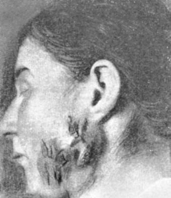

Буллёзные, грибковые, паразитарные и специфические заболевания глотки
Буллёзные заболевания глотки
К этой группе относятся хронически протекающие заболевания, характеризующиеся высыпанием пузырей на коже и слизистых оболочках. В данном разделе мы рассмотрим таких представителей этой группы заболеваний, как пузырчатка, болезнь Дюринга и многоформная экссудативная эритема. по: Бабияк и соавт., т. 1, с. 539
Пузырчатка
Пузырчатка (Pйmphigus) — это тяжелый дерматоз, проявляющийся мульти формным высыпанием пузырей на неизмененных кожных покровах и слизистых оболочках, протекающий хронически и до введения в практику его лечения кортикостероидов заканчивавшийся почти в 100% случаев смертью. Заболевание представляет интерес для оториноларингологов и стоматологов в связи с тем, что его орофарингеальные проявления протекают в аспектах клиники тяжелых фарингитов и стоматитов, лечение которых требует больших усилий и не всегда заканчивается благополучно.
Этиология заболевания не выяснена, а на основании существующих предположений следует полагать, что это полиэтиологическое заболевание, обусловлен ное взаимодействием многих причин, среди которых, вероятно, не последнее ме сто занимает генетическая предрасположенность к их «акцепции» и превращению в этиопатогенетические факторы этой болезни. Этиологию пузырчатки связывают с вирусной инфекцией (Речменский С. С., 1928). Не утратила своего значения и нейрогенная теория А. Г. Полотебнова и Н. В. Никольского. Многие авторы связывают пузырчатку с метаболическими и эндокринными нарушениями. Существует точка зрения, что заболевания типа пузырчатки являются «внешним» про явлением так называемых диффузных болезней соединительной ткани (старое название — «коллагеновые болезни», «коллагенозы») и тесно связанной с ними аллергии. О том, что пузырчатка имеет определенное отношение к патологии соединительной ткани, говорят гистологические исследования кожи, в результате которых было обнаружено, что для всех видов этого заболевания характерно образование пузырей, возникающих как следствие акантоза , который развивается в результате дистрофических изменений клеток мальпигиева слоя, в частности исчезновения их фибриллярной (соединительнотканной) структуры, что нарушает связь между эпителиальными клетками. Нарушение связей между эпителиаль ными клетками приводит к их дегенерации и отторжению от базального слоя; они в большом количестве обнаруживаются в жидкости пузырей.
Клиническая картина. Различают истинную (акантолитическую) и неакантоли тическую пузырчатку. Истинная пузырчатка характеризуется акантозом, при ко тором происходит разрушение межклеточных связей с образованием полостей в эпидермисе, заполненных серозной жидкостью, в которой плавают свободные акан толитические эпидермальные клетки. Истинная пузырчатка проявляется чаще у людей в возрасте 40–60 лет; в детском возрасте наблюдается крайне редко. Она может протекать в нескольких клинических формах. Для ЛОР специалиста и стоматолога представляет интерес вульгарная пузырчатка, характеризующаяся тем, что она чаще всего начинается с поражения слизистой оболочки полости рта, губ и глотки (см. цветную вклейку, рис. 27).
Один или несколько пузырей с серозным или серозно геморрагическим содержимым появляются на мягком небе, вызывая у больного зуд, жжение, умеренную болезненность при глотании без сколько нибудь выраженных симптомов общей интоксикации. Стенка пузыря настолько тонка, что она в первые же минуты разру шается, и потому сам пузырь визуализируется редко, вместо него определяется округлая эрозия бледно розового или ярко красного цвета, окруженная нормаль ной слизистой. Вскоре эрозия углубляется и превращается в язву, образующийся экссудат ссыхается в рыхлые или плотные корки, покрывающие дно язвы.
Среди других форм истинной пузырчатки следует отметить вегетирующую пузырчатку, встречающуюся значительно реже и проявляющуюся пузырями на слизистой полости рта, губ, вокруг естественных отверстий и в складках кожи. Отличается обильными с неприятным запахом отделениями с поверхности пораженных участков и образованием на поверхности эрозий сосочковых разрастаний, напоминающих широкие кондиломы, свойственные вторичному рецидивирующему сифилису. При всех разновидностях истинной пузырчатки в фазе обострения обнаруживаются акантолитические клетки, как правило, выявляет ся симптом Никольского (см. цветную вклейку, рис. 28).
В течении болезни чередуются периоды ремиссий и обострений, причем с каждым новым обострением состояние больного прогрессивно ухудшается. Однако в начале болезни общее состояние больного нарушено мало. Жалобы сводятся в основном к болевым ощущениям в полости рта и глотке (при наличии высыпаний), затруднению глотания и приема пищи. Постепенно, по мере развития кожного поражения, начинает ухудшаться и общее состояние: появляется субфебрилитет, слабость, быстрая утомляемость при физической и умственной работе. Больной больше времени проводит в постели и, наконец, увеличивающаяся сла бость и атония полностью приковывают его к постели. Нарастают явления кахексии . Эрозии на слизистых оболочках и коже эпителизируются медленно, поверхность их принимает бледный, розовато желтый цвет.
Лечение истинной пузырчатки проводят в дерматологическом отделении. Назначают ударные дозы глюкокортикоидов, постепенно снижая их до поддерживающих, а также цитостатики. По показаниям применяют антибиотики, препараты, стимулирующие деятельность сердечно сосудистой системы, и др. Очаги поражения обрабатывают 1–2% раствором анилиновых красителей, кортикостероидами, дезинфицирующими мазями.
Прогноз. При отсутствии надлежащего лечения заболевание неминуемо заканчивается летально. Интенсивное ударное и поддерживающее лечение отодвигает фатальный конец от 6–8 месяцев до 1,5–2 лет. по: Бабияк и соавт., т. 1, с. 540–541
Герпетиформный дерматит (болезнь Дюринга)
Герпетиформный дерматит Дюринга относится к компетенции дерматологов, однако тот факт, что в половине случаев заболевание кожи сопровождается поражением слизистой полости рта и глотки, представляет существенный профессиональный интерес для стоматолога и ЛОР специалиста. Заболевание впервые было описано американским дерматологом Л. А. Дюрингом (Dьhring L. A., 1845–1913), после которого многие авторы исследовали эту болезнь на предмет изучения ее этиологии, патогенеза, морфологии и клинических проявлений, однако ее этио логия и по сей день остается неизвестной и, по видимому, в этом отношении разделяет судьбу этиологии пузырчатки.
Герпетиформный дерматит Дюринга — хроническое рецидивирующее заболе вание кожи и слизистых оболочек полости рта, характеризующееся группирую щейся зудящей полиморфной сыпью, завершающейся образованием пузырей.
Этиология. Существует ряд теорий. Так, еще в начале XX в. А. А. Боголе пов придерживался инфекционной теории, основываясь на результатах бак териологических находок при исследовании содержимого пузырей, однако в ис следованиях других авторов не был выделен специфический бактериальный или вирусный фактор этого заболевания. Еще менее доказательными оказались иммунологические исследования, в результате которых не удалось идентифицировать вирус, который мог бы претендовать на этиологическую монополию герпетиформного дерматита Дюринга. Другие исследователи, учитывая, что герпетиформ ный дерматит нередко наблюдается у невропатов и что при этом заболевании находили изменения в центральной и периферической нервных системах, склонны рассматривать его как ангиотрофоневроз. Как было установлено во второй половине XX в., заболевание связано с синдромом нарушения кишечного всасывания (мальабсорбция), обусловленным необычайной чувствительностью организма к глютену , а также высокой чувствительностью больных к препаратам йода, что дало основание высказать предположение об аллергической природе заболевания, находившее подтверждение в эозинофилии и наличии эозинофилов в жидкости пузырей. Некоторые исследователи в качестве этиологического фактора выдвигают эндокринные расстройства, особенно со стороны щитовид ной железы, что косвенным образом подтверждается возникновением герпетиформного дерматита Дюринга у беременных (herpes gestationis). Выявленные нарушения хлористого и водного обмена также не дали веских оснований для объяснения его этиологии «метаболической теорией». Некоторые сведения указывают на возможность генетической сущности данного заболевания. Так, в сочетании с атрофией слизистой оболочки двенадцатиперстной и тощей кишок, клинически проявляющейся глютеновой энтеропатией, наблюдаются наследственные формы с аутосомно доминантным типом наследования с неполной пе нетрантностью гена.
Морфология, патогенез. Кожное проявление герпетиформного дерматита Дюринга — полиморфная сыпь, типичным элементом которой являются находящие ся в разных фазах развития пузырьки и пузыри, расположенные главным обра зом субэпидермально. Полиморфность процесса проявляется в том, что на коже (как и в полости рта) одновременно присутствуют пятна, волдыри, папулы и глав ным образом пузыри (см. цветную вклейку, рис. 29) различной величины, наполненные сначала прозрачной, затем мутнеющей жидкостью, нередко приобретающей геморрагический характер. Высыпания группируются на коже туловища и конечностей в виде колец, полуколец, гирлянд, что напоминает локализацию высыпаний вдоль нервных стволов при герпес зостер.
Аналогичные высыпания буллезного характера возникают и под слизистой оболочкой полости рта, на мягком небе, реже — на задней стенке глотки. В это время больные ощущают зуд, жжение и умеренные боли в зонах высыпания. При поражении мягкого неба возникает гнусавость, а при появлении пузырей на зад ней стенке глотки — дискомфорт при глотании и ощущение инородного тела. Однако эти субъективные признаки длятся недолго: после появления зрелого пузыря — в течение 20–30 мин или до ближайшего приема пищи, поскольку не прочность стенки приводит к их быстрому разрушению и образованию эрозий. На коже после вскрытия пузырей образуются эрозии, либо быстро подсыхают с формированием медово желтых или кровянистых бурых корок, под которыми постепенно происходит процесс эпителизации. В полости рта эрозии трансформируются в неглубокие язвы, подвергающиеся поверхностному некрозу с после дующей эпителизацией опосредованно через стадию образования грануляцион ного вала (см. цветную вклейку, рис. 30).
Клиническая картина. Герпетиформный дерматит Дюринга обычно возникает в возрасте 40–70 лет. Заболеванию свойственны рецидивы в весенний и осенний периоды времени. Начало заболевания и каждый последующий рецидив сопровождается полиморфными высыпаниями, величина элементов которых на коже может колебаться от горошины до ореха. Начальный период заболевания или возникающего рецидива может, особенно в детском или юношеском возрасте, протекать остро и сопровождаться повышением температуры тела до 37,5–38 °С. В крови имеет ся эозинофилия и умеренный лейкоцитоз. В содержимом пузырей обнаруживают большое количество эозинофилов и нейтрофилы. У больных часто отмечается положительная проба Ядассона . Продолжительность первично возникшей болезни или ее рецидива колеблется в широких пределах — от 3 недель до 3 месяцев.
Диагноз облегчается непостоянной эозинофилией крови, сопровождающей периоды высыпания, сочетающейся с наличием большого количества эозинофилов в жидкости пузырей. Положительному диагнозу способствует также и упомянутая проба Ядассона, сущность которой заключается в следующем: на кожу в местах бывших высыпаний накладывают повязку с мазью, содержащей 50% калия йодида; через 24 ч на месте аппликации мази появляется эритема, иногда с образованием пузырей. В сомнительных случаях для подтверждения диагноза проводят гистологическое исследование пораженного участка кожи, в котором обнаруживают элементы высыпания в субэпидермальном слое, что характерно именно для герпетиформного дерматита Дюринга.
Лечение. Как и полвека назад, эффективным средством в лечении герпетиформного дерматита Дюринга являются сульфоновые препараты, в частности диафе нилсульфон (син.: дапсон, Dapsone), обладающий специфической активностью в отношении различных бактерий, особенно микобактерий туберкулеза и лепры, показан также при лечении герпетиформного дерматита Дюринга. Назначают внутрь по 0,05–0,1 г 2 раза в день по схеме, соответствующей конкретному заболеванию. Назначают также глюкокортикоиды, витамины С и Р, группы В, препараты фосфора и кальция. Рекомендуется диета, лишенная растительных белков (с учетом повышенной чувствительности больных этим заболеванием к глюте ну), с ограничением соли и исключением продуктов, в которых может содержать ся йод (морская рыба, крабы, салаты из морских водорослей и др.).
Прогноз в отношении жизни и выздоровления, как правило, благоприятный. У детей может наступить самоизлечение в период полового созревания («намек» на правомерность эндокринной теории).
Профилактика заболевания не разработана. Для предупреждения рецидивов рекомендуется соблюдение диеты, повторные курсы сульфоновых препаратов, диспансерное наблюдение. по: Бабияк и соавт., т. 1, с. 541–543
Микотические заболевания глотки
Большую часть микотических заболеваний глотки составляют болезни, вызываемые паразитирующими грибами, патогенными для человека, многие из которых обитают как на коже, так и на слизистых оболочках. Наиболее частыми являются лептотриксозный фарингит (ангина), кандидоз, актиномикоз, трихи нилез и дистоматоз глотки, а также риноспоридоз. Ниже приведено краткое описание этих заболеваний. по: Бабияк и соавт., т. 1, с. 543–544
Доля микотической (условно-патогенной) инфекции при хронических заболеваниях глотки достаточно велика и в последние годы возрастает. Кандидоз — наиболее часто встречающееся микотическое поражение глотки у детей. Развитию заболевания в значительной степени способствуют применение антибиотиков широкого спектра действия, кортикостероидных препаратов для лечения различных соматических заболеваний, использование цитостатиков, лучевой терапии, неблагоприятные экологические факторы (хроническое воздействие малых доз радиации, проживание в районах, где используют дефолианты), гиповитаминоз, частые инфекционные заболевания, сахарный диабет и другие тяжелые эндокринные заболевания, иммунодефицитное состояние, системные заболевания крови, хронические заболевания желудочно-кишечного тракта, сенсибилизация и ослабление организма в связи с перенесенными тяжелыми заболеваниями. Развитию кандидозного стоматита (молочницы) способствует недостаточный уход за полостью рта, где остатки пищи подвергаются кислому брожению. Грибы Candida albicans, вызывающие молочницу, лучше развиваются на плоском эпителии, покрывающем слизистые оболочки. Инфекция передается через предметы ухода.
Возбудителем пенициллиоза являются грибы рода Penicillium (puberulum и notatum), а возбудителем аспергиллеза — плесневые грибы рода Aspergillus, кандидоз вызывается дрожжеподобными грибами (преимущественно Candida albicans и Candida parapsillosis). Все эти грибы являются сапрофитами, условно-патогенной микрофлорой; при нарушении реактивности организма детей они активизируются и становятся патогенными. Лептотрихоз глотки вызывается грибами Leptotrix. Актиномикоз глотки вызывают лучистые грибы — актиномицеты. Микотические поражения глотки развиваются на фоне выраженного дисбактериоза — нарушения состава микрофлоры кишечника, обусловленных дефицитом бифидобактерий и присутствием ассоциации условно-патогенных микроорганизмов. Дефицит бифидобактерий и других молочнокислых бактерий приводит к беспрепятственному заселению условно-патогенной микрофлорой, в первую очередь грибами, не только кишечника, но и других соприкасающихся с внешней средой полостей организма (полость рта, носа, ухо). Дисбактериоз кишечника способствует поддержанию микотических воспалительных изменений в глотке и обусловливает нарушения микробиоценоза. Без восстановления микробиоценоза кишечника практически невозможно вылечить данное заболевание у ребенка. Среди хронических грибковых заболеваний глотки у детей наиболее часто наблюдаются молочница, кандидоз, пенициллиоз, аспергиллез, лептотрихоз, актиномикоз. по: Богомильский, Чистякова, с. 313–314
Лептотриксозный фарингит
Заболевание представляет собой инфекционное паразитарное заболевание слизистой оболочки глотки, протекающее в виде острого фарингита или ангины с поражением небных миндалин. Замечено, что лептотриксозный фарингит возникает у ослабленных и умственно отсталых детей и лиц с нарушением функций пищеварения. Его вызывает гриб Leptotrix buccalis. Морфологически заболева ние характеризуется появлением на всей поверхности глотки, в том числе на основании языка, множественных белых точек, плотно спаянных с подлежащей тка нью. Эти белые точки представляют собой колонии паразита, не вызывающие неприятных субъективных ощущений и не нарушающие физиологических функций глотки и полости рта.
Дифференцируют лептотриксозный фарингит в первую очередь с фарингоке ратозом, имеющим с ним много общих внешних признаков (см. цветную вклейку, рис. 18, 5). Однако при фарингокератозе плотные белесые образования располагаются только в устьях крипт небных миндалин, в то время как при лептотриксозном фарингите грибы распространены по всей поверхности слизистой полости рта и глотки. Окончательный диагноз устанавливают путем микроскопического исследования.
Лечение включает применение антимикотических средств (мирамистин, изоконазол, миконазол, нистатин, омиконазол, тиконазол и др.), смазывание колоний грибов препаратами йода, в особо упорных случаях — диатермокоагуляцию. по: Бабияк и соавт., т. 1, с. 544
Лептотрихоз (leptothrixia seu pharyngomycosis) встречается у 5–6% больных микозом глотки. Эта болезнь не является лептотрихозом в полном понимании этого слова, так как ее вызывает микроорганизм бактериального происхождения — Leptotrix buccalis. Этот микроорганизм является нитчатой бактерией — микобактерией семейства Actinomycetales albus varies Omeljansky. В норме он сапрофитирует в ротовой полости. Существует вероятность развития лептотрихоза у больных сахарным диабетом, лиц с системными заболеваниями крови и пищеварительного канала, особенно дисбактериозом кишечника, злокачественными новообразованиями, СПИДом, нарушением баланса вегетативной нервной системы, гиповитаминозом С и В, а также в случае продолжительной антибиотикотерапии и лечения кортикостероидными препаратами. Другими словами, в результате заболеваний, при которых в значительной мере нарушается баланс витаминов, углеводный и белковый обмен, страдает общая резистентность организма.
В формировании патогенетических механизмов лептотрихоза на первое место выходит перестройка иммунной реактивности — накопление и циркуляция в крови антител, обусловливающих реакции немедленного и замедленного типа. Имеет значение и изменение клеточного иммунитета. Весомым звеном в патогенезе фарингомикоза является специфическая и неспецифическая сенсибилизация и аллергия. Определенное значение имеет и травматическое повреждение слизистой оболочки глотки как фактор, способствующий развитию патологического процесса. Заболевание характеризуется ороговением шиповидного плоского эпителия, покрывающего лимфаденоидную ткань. В криптах миндалин происходит паракератоз с метаплазией близлежащей соединительной ткани в хрящевую и даже костную. Шиповидные образования развиваются там, где имеется лимфаденоидная ткань, т. е. на нёбных, глоточной и язычной миндалинах, а также в единичных фолликулах задней и боковой стенок глотки. Такие же изменения могут возникать иногда и на язычной поверхности надгортанника. Указанные шипы имеют желтовато-кремовый цвет, конусообразную или округлую форму, плотно врастают в эпителий и в большом количестве содержат Leptotrix buccalis.
Пробки лептотрихоза обычно совсем не вызывают жалоб и определяются случайно во время осмотра глотки. Лишь иногда больные жалуются на дискомфорт в горле, першение или легкое жжение в зеве. При локализации на надгортаннике возможны приступы судорожного кашля. Лептотрихоз часто сочетается с кандидозным поражением углов рта — «заедами», кандидозным хейлитом, глосситом. Лептотрихоз очень часто по неопытности путают с лакунарной ангиной, особенно в тех случаях, когда пробки выступают из миндаликовых лакун. Отличить лептотрихоз от ангины очень легко — по отсутствию боли во время глотания и других симптомов, характерных для ангины. Микроскопия нативного препарата является самым простым и надежным способом диагностики лептотрихоза. Для анализа необходимо брать кусочек пробки, а не мазок. В снятых шипах находятся несегментированные нити Leptotrix buccalis, иногда грибы рода Candida, которые при лептотрихозе считаются сапрофитами.
Лечение лептотрихоза сопряжено с большими трудностями. Испытано множество средств, но ни одно из них не является эффективным, у некоторых больных лептотрихоз проходит без следа, без какого-либо лечения. Но чаще болезнь носит стойкий характер и нуждается в интенсивном лечении. Проведение тонзиллэктомии малооправданно, так как, во-первых, она не гарантирует излечения (пораженными остаются другие лимфаденоидные образования глотки), а во-вторых, часто удаляют миндалины, не пораженные хроническим воспалительным процессом. Полоскание антисептическими средствами, смазывание йодом и прижигание отдельных пробок гальванокаутером малоэффективно. Выскребание шипов острой хирургической ложкой с последующим прижиганием растворами меди сульфата, трихлоруксусной кислоты, серебра нитрата большей частью не дает продолжительного эффекта. Малоэффективной является и терапия нистатином, леворином, декамином. Лучшие результаты дают промывание лакун 0,1% водным раствором хинозола (2 раза в неделю, на курс 8–10 процедур), 1–2% раствором левамизола и полоскание этими растворами в течение 3–4 мес. Тем не менее и это не дает стойкого эффекта.
Для лечения лептотрихоза миндалин применяют криовоздействие. Прибегают к последовательному локальному замораживанию пораженных участков обеих нёбных миндалин, в каждом из которых образуют 1–3 небольших криодеструктивных очага (диаметром 0,5 см каждый) с экспозицией в каждой точке 3 мин. Пораженные лептотриксом язычная миндалина, боковые валики и гранулы глотки воздействию не подлежат. При необходимости процедуру повторяют через 1 мес. Через 3–4 нед после последнего вмешательства нёбные миндалины очищаются от лептотрихотических бляшек, через 2–3 мес бляшки исчезают с боковых валиков и гранул глотки, а в конце 4-го месяца — и из язычной миндалины. Очищение всего лимфаденоидного глоточного кольца в результате воздействия лишь на нёбные миндалины объясняется повышением гуморального и местного иммунитета под влиянием криотонзиллотомии. При сочетании лептотрихоза с хроническим тонзиллитом проводят двустороннюю тонзиллэктомию. Для лечения лептотрихоза применяются также физиотерапевтические методы: УФО и лазеры (гелиево-неоновый и расфокусированный CO₂-лазер). Это лечение эффективно лишь в том случае, когда лучи непосредственно падают на участок, поврежденный лептотриксом. На необлученных участках лептотрихозные бляшки могут сохраняться. Лечение проводится на фоне гипосенсибилизации и витаминотерапии (витамины группы В, С и К). по: Заболотный и соавт., с. 310–313
Лептотрихоз глотки выражается образованием шиловидных, остроконечных, очень плотных выростов (стебельчатых пленок в виде шипов) серого или желтовато-серого цвета на поверхности неизмененной слизистой оболочки нёбных, язычной, глоточной миндалин, боковых валиков и гранул задней стенки глотки, а также на нёбных дужках. Эти выросты являются следствием ороговения плоского эпителия, крепко сидят на основании, отрываются с трудом по частям, содержат грибы Leptotrix. Заболевание наблюдается преимущественно у детей старшего возраста, обычно оно бессимптомное и длительное. Чаще дети жалуются на щекотание, неловкость при глотании, ощущение инородного тела. Течение болезни длительное и упорное. Воспалительные изменения слизистой оболочки и лихорадка отсутствуют. При лептотрихозе на фоне активной антифунгальной терапии производят удаление, крио-, лазеродеструкцию, ультразвуковую дезинтеграцию и электрокоагуляцию грибковых структур. по: Богомильский, Чистякова, с. 315, 317
Фарингомикоз (pharyngomycosis) — поражение слизистой оболочки глотки микроорганизмом Leptotrix buccalis, сапрофитирующим в полости рта. Заболеванию способствуют длительное нерациональное применение антибиотиков, гиповитаминозы, хронический тонзиллит. На поверхности слизистой оболочки задней стенки глотки, боковых валиков, язычка, мягкого нёба, миндалин появляются беловато-желтые плотные образования конусовидной формы в виде шипов высотой 2–3 мм, очень прочно спаянные с подлежащей тканью. Они возникают вследствие усиленной пролиферации эпителия с ороговением. Эти шипы отчетливо видны при фарингоскопии. Течение заболевания хроническое, не беспокоящее больного; часто обнаруживается случайно при осмотре глотки. Лишь иногда больной указывает на неприятное ощущение чего-то постороннего в горле. При лабораторном микологическом исследовании в плотных шипах находят гриб лептотрикс. Назначают декамин по 1 карамели 4 раза в день в течение 2 нед, полоскание горла и промывание лакун миндалин 0,1% водным раствором хинозола, смазывание слизистой оболочки и миндалин раствором Люголя. При сопутствующем хроническом тонзиллите показано удаление миндалин. по: Овчинников, Гамов, с. 203–204
Кандидоз слизистой оболочки полости рта и глотки
Кандидоз — микотическое заболевание кожи и слизистых оболочек, ногтей, внутренних органов, вызываемое дрожжеподобными грибами рода Candida, в частности Candida albicans. Развитию кандидоза способствуют гипопаратиреоз, нарушение углеводного обмена, связанное с гипофункцией поджелудочной железы, нарушения протеинообразующей функции печени, дисбактериоз кишечника, возникающий чаще всего при длительном лечении антибиотиками (ауреоми цин, террамицин) и кортикостероидами (Шеклаков Н. Д., 1989). Кандидоз может поражать практически все кожные покровы и слизистые оболочки. Нередко он возникает при травмах слизистой оболочки (механические повреждения неправильно установленными протезами зубов, термические и химические ожоги), при атмосферных профвредностях. Выделяют несколько форм заболевания кандидо зом, которые нередко сочетаются между собой: кандидоз слизистых оболочек полости рта и половых органов, кандидоз складок кожи и др.
Кандидоз слизистой оболочки полости рта и глотки (дрожжевой стоматит, или молочница) чаще развивается у грудных детей и пожилых людей, особенно у ослабленных хроническими, тяжело протекающими заболеваниями. Сначала появляется сухость слизистой полости рта, затем множественные точечные налеты беловатого цвета на небе, языке, щеках. При их слиянии образуются крупные беловато серые пленки, которые позднее легко отделяются; под ними обнаруживаются поверхностные опалесцирующие («сухие») эрозии.
Различают острую и хроническую формы кандидоза слизистых полости рта и глотки. Острая форма — острый псевдомембранозный кандидоз (молочница) — самая частая форма поражения. Проявляется образованием белых или синевато белых пятен на слизистой полости рта (см. цветную вклейку, рис. 31), иногда на поминающих творожистое образование, скопление которого на разных участках неодинаково.
Хронический гиперпластический кандидоз характеризуется появлением на гиперемированной слизистой полости рта и глотки плотно спаянных бляшек. Час то налет располагается на спинке языка в области, типичной для ромбовидного глоссита (см. цветную вклейку, рис. 32). Больные ощущают в полости рта значительную сухость, постоянное желание увлажнить рот, при этом отмечается также и гипосаливация, усугубляющая дискомфортное состояние больного.
При хроническом атрофическом кандидозе (см. цветную вклейку, рис. 33) возникает атрофия сосочков на спинке языка (а), либо атрофический ромбовидный глоссит (б).
Кандидозная ангина характеризуется появлением в глубине фолликулов гло точных миндалин белых, блестящих пробок. Миндалины гиперемированы, без болезненны. Эта форма кандидоза обычно имеет хроническое течение, температура тела не повышается, болезненность при глотании отсутствует.
Хронический генерализованный (гранулематозный) кандидоз возникает обыч но у детей с иммунодефицитным состоянием , недостаточностью функции пара щитовидных желез. Он проявляется, как правило, в раннем детском возрасте в виде молочницы, кандидозного хейлита, а также поражением гортани, трахеи, бронхов, мелкоочаговой пневмонией, иногда образуются каверны .
Редко встречается в наших широтах риноспоридиоз, вызываемый паразитичес ким грибом Rhinosporidium. Заболевание характеризуется картиной глубокого хронического микоза, основным элементом которого являются крупные красные ма линообразные полипозные опухоли — мягкие сосудистые в носу, носоглотке, на конъюнктиве глаза, реже — во влагалище, уретре и на коже. Поражает домашних животных (лошади, коровы, ослы). Пути инфицирования человека не ясны. Заражение может происходить в сточной воде, прудах. Встречается в Аргентине, Северной Америке, Африке, Индии, Италии, Иране, Великобритании; в России и на территории СНГ отмечены единичные случаи (Кашкин П. Н., 1954).
Лечение заключается в назначении антимикотических средств (нистатин, ле ворин, низорал и др.). При хроническом кандидозе проводят иммунотерапию. Больным, длительное время получавшим антибиотики широкого спектра действия и кортикостероиды, для профилактики кандидоза назначают нистатин, смазывают пораженные участки раствором микостатина на глицерине. по: Бабияк и соавт., т. 1, с. 544–545
Грибковая ангина — воспаление слизистой оболочки нёбных миндалин, вызванное дрожжеподобными грибами рода Candida, чаще Candida albicans. В полости рта у здорового человека эти грибы встречаются как сапрофитирующая флора, однако при инфекционных заболеваниях, снижении общей резистентности организма, нарушении питания, нерациональной антибиотикотерапии могут приводить к угнетению жизнеспособности кишечной палочки и стафилококков — антагонистов дрожжеподобных грибов, что ведет к бурному развитию последних. Грибковые ангины характеризуются острым началом с умеренным повышением температуры тела, однако признаки общей интоксикации организма выражены слабо. Больного беспокоят болезненность в горле, першение, сухость. При фарингоскопии на фоне разлитой гиперемии слизистой оболочки нёбных миндалин появляются белые пятнышки в виде островков творожистых масс. Последние распространяются на дужки, язычок, корень языка. В мазках со слизистой оболочки глотки обнаруживаются скопления дрожжевых клеток. Необходимо отменить антибиотики, назначить антимикотические средства: флуконазол, итраконазол, кетоконазол, витамины группы В, С, К. Пораженные участки смазывают растворами натамицина, тербинафина, циклопирокса. по: Пальчун, Магомедов, Лучихин, учебник, с. 274–276
Молочница встречается у грудных и ослабленных детей раннего возраста, у детей, страдающих диспепсией. Сначала может оставаться почти бессимптомной и не вызывать повышения температуры. На языке появляются очаги гиперемии, шелушения эпителия, сухость слизистой оболочки; ребенок начинает хуже сосать грудь. Через 2–3 дня на слегка воспаленной слизистой оболочке губ, щек и десен появляются множественные мелкие белые рыхлые высыпания. В дальнейшем они увеличиваются, сливаются в более крупные очаги, покрывают слизистую оболочку полости рта на значительном протяжении. Налеты плотно сращены с подлежащими тканями, с трудом отделяются, кровоточат и быстро вновь рецидивируют. Через некоторое время налет сам отделяется от слизистой оболочки и легко отходит при снятии пинцетом или даже ваткой. Слизистая оболочка под ним гиперемирована, но не изъязвлена. Этот процесс может распространиться на пищевод, желудок и кишечник. В дальнейшем нарушается сосание. Дети берут грудь и с плачем бросают ее после первого глотка, худеют. Часто наблюдается диарея, способствующая истощению. Молочница значительно ухудшает прогноз основного заболевания. Клиническая картина кандидоза, пенициллиоза и аспергиллеза миндалин практически идентична.
Хронический рецидивирующий орофарингеальный микоз (в большинстве случаев кандидоз) проявляется в виде тонзилломикоза и фарингомикоза. Жалобы больных типичны: повторяющиеся с определенной цикличностью (через 2–3 нед) острые воспалительные заболевания глотки с гиперемией, болью в горле, появление характерных налетов на миндалинах и на задней стенке глотки, стойко сохраняющихся при лечении обычными традиционными консервативными методами. Тонзилломикоз — грибковое поражение миндалин. На гиперемированной слизистой оболочке нёбных миндалин появляются ограниченные красные пятна, на которых откладывается молочно-белая пленка. При слиянии мелких очагов образуются обширные, трудно снимаемые пленки, которые могут распространяться на мягкое нёбо, нёбные дужки и язык. Больные отмечают сухость и постоянную ноющую боль в горле. Кандидоз нёбных миндалин может проявиться также в виде гранулематозного воспаления или папилломатозного роста.
Признаки грибкового поражения нёбных миндалин у детей: строгая цикличность рецидивов заболевания; выраженная поверхностная сосудистая инъекция слизистой оболочки; характерный белый налет, повторяющий рисунок устьев лакун миндалин или в виде рассеянных небольших округлых беловатых пятен; распространение микотических налетов на нёбные дужки и внутреннюю поверхность щек с развитием сопутствующего стоматита, выраженная регионарная лимфаденопатия. Фарингомикоз — грибковое поражение задней стенки глотки. Субъективно проявляется сухостью, першением, царапанием, зудом и жжением в горле, болью при глотании, ощущением инородного тела, навязчивым кашлем. При фарингоскопии отмечаются гиперемия слизистой оболочки задней стенки глотки, творожистый налет, легко снимаемый ваткой, под ним яркая сочная слизистая оболочка, ее поверхность часто эрозивная. При гранулезной форме фарингомикоза налет выявляется в области лимфоидных гранул, а при боковой — в области боковых глоточных валиков с последующим распространением на задние нёбные дужки. Грибковое поражение миндалин или задней стенки глотки у детей часто сочетается с грибковым поражением углов рта в виде трещин и эрозий слизистой оболочки (кандидозные «заеды»). У детей отмечают выраженное увеличение заднешейных лимфатических узлов при грибковом фарингите, подчелюстных, тонзиллярных и передних шейных при тонзилломикозе. по: Богомильский, Чистякова, с. 314–315
Фарингомикоз
Фарингомикоз — разновидность микоза, протекающего с преимущественным поражением глотки. В большинстве случаев вызван дрожжеподобными, реже — плесневыми грибами. Развитию заболевания способствует длительный прием анти биотиков, кортикостероидов, цитостатиков, травмы и хронические воспалительные процессы в глотке, сахарный диабет, туберкулез, гиповитаминоз.
Клиническое течение может быть острым и хроническим. Процесс локализует ся главным образом на небных миндалинах, небных дужках, задней стенке глотки. У больных возникают ощущения царапанья, жжения и дискомфорта в глотке, недомогание, головная боль, субфебрильная температура тела. При фарингоми козе, вызванном дрожжеподобными грибами, в глотке обнаруживают беловатые, различной величины налеты, которые легко снимаются, обнажая гиперемирован ные участки слизистой, реже — кровоточащие изъязвления. При фарингомикозе, вызванном плесневыми грибами, налеты имеют желтоватую окраску, с трудом снимаются, что может вызвать подозрение на наличие дифтерии зева. Возможно распространение грибов на гортань, пищевод, образование паратонзиллярных абсцессов.
Диагноз ставят на основании данных фарингоскопии, микологического ис следования налетов. Дифференциальную диагностику проводят с дифтерией глотки, при изъязвлениях — с сифилисом, туберкулезом (см. далее), распадающейся опухолью и другими паразитарными микотическими заболеваниями глотки (см. ранее).
Лечение: нистатин в таблетках, которые необходимо тщательно разжевывать. При неэффективности — леворин, декамин. Очаги поражения смазывают 1% раствором генцианвиолета, 10% раствором буры в глицерине, раствором Люголя.
Прогноз, как правило, благоприятный. Возможны рецидивы. по: Бабияк и соавт., т. 1, с. 545–546
Изолированное грибковое поражение миндалин глотки достаточно редкое состояние. В микотический процесс прежде всего вовлекается слизистая оболочка полости рта и глотки. В детском возрасте следует выделить проблемы орофарингеального кандидоза новорождённых и грибкового аденоидита. Примерно у пятой части детей с хроническим аденоидитом выделяются дрожжеподобные грибы рода Candida (C. albicans, C. tropicalis, C. famata, C. gullermondia и др.), как изолированно, так и в сочетании с бактериальными возбудителями (прежде всего с Staphylococcus aureus). Молочница новорождённых встречается в 3 % случаев. У взрослых пациентов также преобладающей грибковой патологией глотки является орофарингеальный кандидоз.
Тонзилломикоз при орофарингеальном кандидозе. Это заболевание развивается на фоне общих и/или местных факторов риска. К местным факторам риска относятся: дефекты слизистой оболочки полости рта и глотки; заболевания полости рта: периодонтит, гингивит, кариес и др.; нарушение функции слюнных желез, приводящее к ксеростомии; эндотрахеальная интубация; зубные протезы; длительное использование местных антибактериальных препаратов, ингаляционных глюкокортикостероидов, в результате воздействия которых меняется микробиоценоз полости рта и нарушаются механизмы местной защиты слизистых. Общие факторы риска — это состояния, обусловливающие системный иммунодефицит. Это возраст старше 65 лет, ВИЧ-инфекция, сахарный диабет, злокачественные новообразования, применение системных глюкокортикостероидов, антибактериальных препаратов, иммуносупрессоров и цитостатиков и др.
Ведущим возбудителем ОФК является вид C. albicans (около 95 %). Кандидоз нёбных миндалин обычно протекает в псевдомембранозной форме, чаще процесс двусторонний. Характеризуется наличием на зевной поверхности белесоватых островчатых или плёнчатых налётов, которые выходят за пределы лимфоидной ткани на дужки, мягкое нёбо, язычок, корень языка. Фарингоскопически картина напоминает бактериальный тонзиллит. В отличие от лакунарной ангины кандидоз миндалин обычно не сопровождается выраженным местным болевым и общеинфекционным синдромами, регионарной лимфаденопатией. У большинства пациентов грибковое поражение нёбных миндалин является проявлением ОФК с тотальным поражением структур полости рта и ротоглотки и является критерием глубокого иммунодефицита.
Диагноз ОФК устанавливают на основании фарингоскопической картины (эндоскопического обследования носоглотки при грибковом аденоидите) при наличии типичных творожистых налётов на ткани нёбных или носоглоточной миндалин и последующих микроскопического и микологического исследования. Лечение орофарингеального кандидоза. Препаратом выбора является азольный антимикотик флуконазол. У детей он используется в суточной дозировке от 1 до 3 мг на кг в один приём, у взрослых — 100–200 мг в сутки. Продолжительность лечения вариабельна, зависит от факторов риска. Так, при ОФК у больных ВИЧ-инфекцией флуконазол применяется до 14 дней. При неэффективности возможно увеличение суточной дозы флуконазола до 400 мг, использование итраконазола раствора для приёма внутрь — 200–400 мг или позаконазола — 600 мг в сутки.
Для местного лечения ОФК используют: антимикотики для местного применения — нистатин 500 тыс. ЕД каждые 6 часов; натамицин суспензия 2,5 % — 1 мл каждые 6–8 часов; клотримазол 1%-ный раствор — 1 мл на каждые 6 часов; антисептики с противогрибковым действием — раствор 0,01%-ный мирамистина 3 раза в сутки, полоскание или орошение; раствор гидроксиметилхиноксалиндиоксида 0,25 мг/мл — полоскание 15 мл 3 раза в сутки до 7 дней и др.
Тонзилломикоз, вызванный плесневыми микромицетами, встречается редко. Основными возбудителями этой группы заболеваний являются представители рода Aspergillus. Клиническая картина аспергиллёзного тонзиллита имеет ряд особенностей: процесс односторонний, другая миндалина интактна; поражённая миндалина увеличена в объёме и гиперемирована; на зевной поверхности нёбной миндалины и передней нёбной дужке могут определяться налёты желтовато-беловатого цвета; плёнчатые налёты с усилием снимаются, оставляя под собой эрозированную слизистую оболочку. Диагноз плесневого микоза глотки подтверждается микроскопическим и микологическим исследованием налётов. Тонзилломикоз, вызванный микромицетами Aspergillus spp., требует применения системных антимикотических препаратов, прежде всего из группы азолов: вориконазола, позаконазола, изавуконазола. по: Чарушин и соавт., с. 107–110
Фарингомикоз в национальном руководстве
В данной теме обобщён опыт авторов по диагностике и лечению больных с различными формами грибкового поражения глотки. Фарингит — воспаление слизистой оболочки ротоглотки. Тонзиллит — воспаление одного или нескольких лимфоидных образований глоточного кольца. Фарингомикоз (ФМ), тонзилломикоз (ТМ), грибковый аденоидит (ГА) — фарингит/тонзиллит, вызванный грибами. Синонимы: грибковое поражение полости рта, грибковый фарингит, грибковый тонзиллит, грибковое поражение глотки, молочница. по: Нац. руководство, 2016, с. 837
ФМ по локализации — хейлит, глоссит, стоматит, гингивит, фарингит; ТМ, ГА — тонзиллит, аденоидит. По клиническому течению выделяют 2 формы фарингомикоза — острая и хроническая. Во многих случаях острый процесс переходит в хронический вследствие неправильной диагностики и нерационального лечения. Клинико-морфологические варианты ФМ:
- Эритематозный (катаральный) — эритема с гладкой «лакированной» поверхностью, при этом наблюдается болезненность, жжение, сухость в полости рта.
- Псевдомембранозный — налёты белого цвета, творожистого вида, снимающиеся с обнажением ярко-красного основания, иногда с кровоточащей поверхностью.
- Гиперпластический — гиперплазия лимфоидной ткани, эритема с гладкой «лакированной» поверхностью, при этом наблюдаются болезненность, жжение, сухость в полости рта.
- Эрозивно-язвенный — белые пятна и бляшки, трудно отделимые от подлежащего эпителия, по удалении обнажается эрозированная кровоточащая поверхность слизистой оболочки.
Коды по МКБ-10: B37.0 Кандидозный стоматит; J02.8 Острый фарингит, вызванный другими уточнёнными возбудителями; J03.8 Острый тонзиллит, вызванный другими уточнёнными возбудителями; J35.8 Другие хронические болезни миндалин и аденоидов; B37.8 Кандидоз других локализаций.
Частота развития ФМ за последние 15 лет резко увеличилась и составляет до 30% в структуре инфекционных поражений глотки и миндалин. В детском возрасте заболеваемость ФМ высока. Особенно распространённым является кандидоз слизистой оболочки полости рта у новорождённых (молочница). Возникновение кандидоза связано с незавершённостью формирования иммунной защиты у новорождённых от воздействия микотической инфекции. ФМ часто болеют и дети старшего возраста. У многих из них возникновение заболевания связано с грибковым инфицированием в раннем возрасте и неполной элиминацией очага инфекции. ФМ встречается у 14,9% детей с хроническим фарингитом, ТМ — у 25,6% детей с хроническим тонзиллитом и ГА — у 18,8% детей с хроническим аденоидитом. У взрослого населения ФМ диагностируется с одинаковой частотой от 16 до 70 лет, а в отдельных случаях и в более старшем возрасте.
Основными возбудителями ФМ являются различные виды дрожжеподобных грибов рода Candida (в 97% случаев): C. albicans, C. tropicalis, C. krusei, C. glabrata, C. parapsillosis, C. intermedia, C. brumpti, C. sake и др. Доминирующим возбудителем является гриб C. albicans, выделяемый в 50% наблюдений. В 3% грибковые поражения ротоглотки вызываются плесневыми грибами родов Geotrichum, Aspergillus, Penicillium и др. При грибковом поражении глотки и миндалин у детей возбудителями явились грибы рода Candida, они выявлены в 100% наблюдений. При культуральной диагностике выделяют следующие виды: C. albicans (40,6%), C. tropicalis (17,1%), C. famata (4,6%), C. gullermondia (1,5%), C. pseudotropicalis (1,5%), Candida spp. (34,6%).
В основном все виды грибов, вызывающих микоз ЛОР-органов, относятся к группе условно-патогенных и вызывают заболевание только при определённых факторах, предрасполагающих к развитию и размножению грибов, обеспечивая их переход от сапрофитии к патогенности. В связи с этим важно знать предшествующие заболеванию условия, приводящие к реализации патогенных свойств грибов. Основными патогенетическими моментами возникновения микоза являются адгезия (прикрепление гриба к слизистой оболочке), колонизация гриба и его инвазивный рост. Эндогенными факторами, предрасполагающими к возникновению микотического поражения, являются соматические заболевания. Сопутствующие им общее ослабление организма, нарушение обмена веществ, авитаминозы могут играть немаловажную роль в возникновении микоза. Кроме того, к возникновению грибковых осложнений могут привести лечение цитостатическими препаратами и лучевая терапия.
Рост числа больных ФМ и ТМ обусловлен существенным увеличением факторов риска их развития, среди которых ведущие позиции занимают ятрогенные иммунодефицитные состояния, возникающие вследствие массивной антибактериальной терапии, длительного использования глюкокортикоидных и иммуносупрессивных препаратов, при онкологических заболеваниях, болезнях крови, ВИЧ-инфекции, эндокринопатиях. Среди профессиональных вредностей имеет значение контакт с пылью, газами, повышенными температурами. При этом создаются оптимальные предпосылки для развития грибкового воспаления, возбудителями которого являются оппортунистические грибы, сапрофитирующие на слизистой оболочке глотки и в окружающей среде. Проблема микоза слизистой оболочки глотки приобретает важное социальное значение не только вследствие всё более широкого распространения, но также и потому, что грибковое поражение этой области протекает тяжелее, чем другие воспалительные процессы той же локализации, и может явиться первичным очагом диссеминированного висцерального микоза либо стать причиной грибкового сепсиса. Скрининг: микроскопия нативного и окрашенного препарата — мазок со слизистой оболочки полости глотки и с поверхности миндалин при ФМ, ТМ.
При ФМ у больного имеют место жалобы на дискомфорт в горле, ощущение жжения, сухости, саднения, першения, которые более выражены, чем таковые при бактериальном поражении глотки. Болевая симптоматика выражена умеренно, при глотании и приёме раздражающей пищи боль усиливается. Больные отмечают иррадиацию боли в подчелюстную область, на переднюю поверхность шеи и в ухо. При ГА у детей отмечают беловатые нитчатые наложения на поверхности глоточной миндалины, в криптах. По характеру распространения налёт наиболее часто локализован в нижних отделах, хотя встречаются варианты с поражением всей поверхности глоточной миндалины. Данные признаки сочетаются с отёком миндалины, сглаженностью лакун, а также наличием слизистого или слизисто-гнойного секрета. Причём характер секрета, как правило, густой. При этом степень гипертрофии глоточной миндалины соответствует II–III.
У больных ФМ и ТМ следует выяснить, не было ли ранее паратонзиллитов и паратонзиллярных абсцессов, каковы периодичность, длительность и характер обострений тонзиллита. Учитывается ранее проводимое лечение (местное или общее), его эффективность: не было ли ухудшения состояния. Обязательно надо выяснить, лечились ли ранее больные антибиотиками, кортикостероидами, цитостатиками (длительность и интенсивность лечения), особенности производственных и бытовых условий, перенесённые ранее заболевания, аллергологический анамнез. Следует иметь в виду, что у больных ФМ и ТМ отмечаются частые обострения, отсутствие или незначительный эффект от стандартных методов лечения.
Морфологические изменения при ФМ характеризуются отёком и инфильтрацией слизистой оболочки, инъекцией её сосудами, десквамацией эпителия. Характерными клиническими признаками хронического фарингита грибковой этиологии являются неравномерная гиперемия и инфильтрация слизистой оболочки задней стенки глотки. На фоне субатрофии отмечается увеличение боковых валиков. Нередко патологические изменения сопровождаются беловатыми творожистыми легко снимающимися налётами, под которыми обнаруживаются зоны эрозии слизистой оболочки. При язвенно-некротической форме грибкового тонзиллита налёты распространяются за пределы нёбных миндалин на нёбные дужки и мягкое, а иногда и твёрдое нёбо. Наличие налётов и одностороннее поражение являются патогномоничными диагностическими признаками ФМ. При хроническом тонзиллите проводится обследование вне периода обострения. Нужно обращать внимание на окраску слизистой оболочки ротоглотки, миндалин, характер налётов [их цвет, распространённость, консистенцию (плотные или рыхлые)], размер миндалин, отёчность, спаянность с дужками, наличие в лакунах содержимого. Обязательно осматривается язычная миндалина (её окраска, размеры, наличие налётов), лимфатические узлы.
Грибковое поражение глотки может быть заподозрено на основании данных мезофарингоскопии, но решающее значение для постановки правильного диагноза имеют микологические лабораторные методы исследования. При этом однократно полученные отрицательные результаты не указывают на отсутствие грибкового заболевания, поэтому необходимо произвести повторное исследование патологического отделяемого. И наоборот, единичный рост грибов в посеве не всегда свидетельствует о грибковом патологическом процессе. При микологическом исследовании проводятся микроскопия, а затем посев отделяемого на питательные среды. Для точной диагностики важен правильный отбор проб патологического материала на исследование. Налёты с поверхности миндалин обычно легко снимаются. Большие, плотные налёты снимают на предметное стекло с помощью ушного пинцета и, не размазывая, покрывают другим предметным стеклом. Скудные налёты удаляют с помощью ложки Фолькманна осторожно, чтобы не травмировать подлежащие ткани.
При кандидозе миндалин важны микроскопические исследования как в нативном, так и в окрашенном виде. Для проведения микроскопии препараты окрашивают метиленовым синим, по Романовскому — Гимзе, калькофлюором белым. При микроскопии выявляются бластоспоры дрожжеподобных грибов рода Candida, хорошо видно их почкование, а также нити псевдомицелия. Мицелий дрожжеподобных грибов Candida состоит из пучков удлинённых клеток, соединённых в цепочки, которые напоминают истинный мицелий. Истинный мицелий представляет собой длинную трубку, разделённую поперечными перегородками, с единой оболочкой; псевдомицелий не имеет общей оболочки. Особенности псевдомицелия гриба Candida считаются одним из достоверных признаков дифференциации его от других грибов. В начальной стадии заболевания при микроскопии налётов в поле зрения обнаруживаются скопления бластоспор грибов с «ростовыми трубками», а нити псевдомицелия единичные или отсутствуют. В разгар заболевания в мазке видны обильные скопления почкующихся клеток гриба Candida и многочисленные нити псевдомицелия. Таким образом, точный диагноз может быть установлен уже по данным микроскопического исследования. по: Нац. руководство, 2016, с. 837–840
Культуральные исследования являются одним из важных методов диагностики кандидозов. Они не только подтверждают диагноз грибкового заболевания, но и дают возможность определить вид возбудителя, судить об эффективности лечения. Помимо этого, обязательны выполнение клинического анализа крови, мочи, определение уровня сахара крови, ВИЧ, RW, HBs, HCV, иммунограмма. Таким образом, диагноз грибкового поражения глотки ставится на основании:
- Клинических данных.
- Выявления грибов при микроскопии мазков со слизистой оболочки.
- Положительных результатов при посевах на питательные среды.
Дифференциальную диагностику необходимо проводить с острым бактериальным фарингитом и тонзиллитом, скарлатиной, дифтерией, туберкулёзом, сифилисом, ангинозной формой инфекционного мононуклеоза, ангиной Симановского — Плаута — Венсана, злокачественными новообразованиями, лептотрихозом, красным плоским лишаем, лейкоплакией истинной, лейкоплакией мягкой, «географическим» языком, гранулематозом, пузырчаткой, ромбовидным глосситом, железами Фордайса. Консультация иммунолога — выявление и коррекция иммунодефицитных состояний; эндокринолога — выявление эндокринной патологии, коррекция эндокринопатии; онкологом — исключение новообразования полости рта и глотки; инфекциониста — исключение дифтерии и мононуклеоза; ревматолога — исключение аутоиммунных заболеваний; дерматолога — исключение заболеваний соединительной ткани. Пример формулировки диагноза: хронический катаральный фарингит грибковой этиологии (кандидомикоз). Кандидозный тонзиллит. Обострение.
Целью лечения являются элиминация гриба — возбудителя микоза, а также коррекция иммунодефицитного состояния. Показаниями к госпитализации являются осложнённые формы тонзилломикоза аспергиллёзной этиологии. Во время проведения терапии ФМ больным необходимо придерживаться щадящей диеты, избегать контрастных, острых блюд. Необходимо проводить тщательную обработку съёмных зубных протезов и по необходимости их замену с целью избегания дополнительного травмирования слизистой оболочки полости рта и создания там очага грибковой инфекции. Необходимо ограничить воздействие вредных факторов внешней среды. Решающее значение имеет отказ от курения. При сохранении сухости слизистой оболочки глотки назначают орошение глотки и ингаляции с минеральными водами и рекомендуют увлажнение воздуха в жилых и рабочих помещениях.
Лечение всегда следует начинать с элиминации возбудителя. При проведении лечения необходимо учитывать предшествующие эпизоды грибкового поражения и лечения антимикотиками. Коррекция общих и местных предрасполагающих факторов проводится одновременно либо вторым этапом. Традиционно лечение ФМ начинают с применения местных форм противогрибковых препаратов (табл. 1). К ним относятся водные суспензии полиеновых антимикотиков и производные имидазола, назначаемые в виде аэрозолей, растворов, капель, жевательных таблеток. Полиеновые антимикотики местного действия (нистатин, натамицин, амфотерицин В) в России, к сожалению, представлены в формах, не приспособленных для нанесения на слизистую оболочку полости рта и глотки, поэтому врачу и пациенту необходимо адаптировать их самостоятельно. Необходимо объяснить пациенту, что любой препарат для местного лечения должен максимально долго находиться в полости рта. Разжёванная после еды таблетка нистатина в виде кашицы должна находиться в полости рта несколько минут. Можно приготовить суспензию нистатина, для чего таблетку разминают и смешивают с небольшим объёмом воды. по: Нац. руководство, 2016, с. 840–842
Таблица 1. Режимы применения местных противогрибковых препаратов для лечения фарингомикоза (по данным национального руководства, табл. 12-3, с. 842)
| Препарат | Лекарственная форма | Способ применения |
|---|---|---|
| Нистатин | Таблетки по 250 000, 500 000 ЕД | Рассасывать или разжёвывать 4 раза в день после еды |
| Нистатин | Водная суспензия 100 000 ЕД 1 мл (готовится ex tempore) | Смазывание поражённых участков 4–6 мл 4 раза в сутки или полоскание глотки 20 мл 4–5 раз в сутки в течение 1 мин |
| Амфотерицин В | Суспензия 100 мкг/мл (готовится ex tempore) | Смазывание поражённых участков 1 мл суспензии 4 раза в сутки |
| Натамицин | Суспензия, 2,5% | Смазывание поражённых участков 1 мл суспензии 6 раз в сутки |
| Клотримазол | Раствор, 1% | Смазывание поражённых участков 1 мл раствора 4 раза в сутки |
Из производных имидазола широко применяется клотримазол в виде раствора для смазывания полости рта. Также возможно применение растворов антисептиков и красителей, однако эти препараты уступают по эффективности антимикотикам, их непрерывное использование вызывает раздражение слизистой оболочки, и к ним быстро развивается устойчивость возбудителей ФМ. Поэтому местные антисептики рекомендовано чередовать каждую неделю. Растворы антисептиков нельзя проглатывать, в отличие от растворов антимикотиков. Системные препараты в качестве средств первого выбора применяют при определённых показаниях:
- Грибковый аденоидит у детей.
- Неэффективность местной терапии.
- Частые рецидивы после местной терапии, хронические многолетние рецидивирующие формы ФМ.
- Иммунодефицит на фоне ВИЧ-инфекции.
- Сопутствующие онкологические заболевания.
- Тяжёлые формы сахарного диабета.
- Сопутствующий кандидоз гладкой кожи и её придатков.
Препаратом выбора при назначении системной терапии иммунокомпетентным пациентам с кандидозом является флуконазол (табл. 2). Для лечения обострений ФМ у пациентов с иммунодефицитом доза флуконазола увеличивается до 200 мг/сут, а продолжительность терапии — до 28 дней, при этом обязателен приём «противорецидивной» дозы — 100 мг флуконазола 3 раза в неделю пожизненно. Препаратами резерва для проведения системной терапии ФМ и ТМ являются итраконазол и кетоконазол. Они назначаются пациентам, у которых при выявлении возбудителя доказана его резистентность к флуконазолу. Альтернативными препаратами являются амфотерицин В, вориконазол, позаконазол и каспофунгин. Они назначаются только в стационаре, только по жизненным показаниям пациентам с иммунодефицитом различного генеза. Лечение обострения ФМ должно продолжаться в среднем 2–3 нед и в течение 1 нед после стихания жалоб и клинических признаков заболевания. При лечении ТМ применяют те же препараты, что и при терапии ФМ, но при лечении ТМ увеличивают продолжительность курса и дозу системного противогрибкового препарата. Так как поражение слизистой оболочки глотки происходит на фоне локального дисбиоза, необходимо проводить и микробиологическую коррекцию данного биотопа. Мы применяем пробиотические комплексы на основе смеси нормальных стрептококков и лактобацилл.
Таблица 2. Дозы и режимы применения системных противогрибковых препаратов для лечения ФМ и ТМ у иммунокомпетентных пациентов (по данным национального руководства, табл. 12-4, с. 843)
| Препарат | Лекарственная форма | Режимы применения |
|---|---|---|
| Флуконазол | Капсулы, 50 или 100 мг | Внутрь, 50–100 мг/сут в течение 14 дней |
| Итраконазол | Раствор для приёма внутрь, 10 мг/мл | Внутрь, 200 мг/сут в течение 14 дней |
| Итраконазол | Капсулы, 100 мг | Внутрь, 100–200 мг/сут в течение 14 дней |
| Кетоконазол | Таблетки, 200 мг | Внутрь, 200–400 мг/сут в течение 28 дней |
| Вориконазол | Таблетки, 50 или 200 мг | Внутрь, 200 мг 2 раза/сут или 6 мг/(кг×сут) в 2 приёма, затем 4 мг/кг в 2 приёма |
| Позаконазол | Суспензия, 40 мг/мл | Внутрь, 400 мг 2 раза/сут первые 3 дня, затем 400 мг/сут в течение 28 дней |
| Каспофунгин | Лиофилизированный порошок | Внутривенно, 70 мг в 1-е сутки, затем 50 мг/сут |
| Амфотерицин В | Лиофилизированный порошок, 50 000 ЕД | Внутривенно капельно, 0,3 мг/(кг×сут) |
Хирургическое лечение при ФМ не проводится. Хирургическое лечение при ТМ и ГА проводится в плановом порядке по общим показаниям для хронического тонзиллита, не менее чем через 1 мес после купирования явлений грибкового воспаления. Основные меры по профилактике ФМ должны быть направлены на устранение факторов, имеющих значение в патогенезе грибкового заболевания и способствующих активации грибковой флоры, а именно: рациональная терапия антибиотиками и кортикостероидами; коррекция гликемического профиля у больных сахарным диабетом, общеукрепляющая терапия, тщательный подбор съёмных зубных протезов и уход за ними, обработка глотки после ингаляции кортикостероидов у больных с бронхиальной астмой. При первых признаках фарингита, развившегося на фоне тяжёлой соматической патологии, необходимо обратиться к врачу. Самолечение без соответствующей микробиологической диагностики приводит к хронизации процесса и образованию резистентных штаммов грибов — возбудителей ФМ. Прогноз при своевременном обращении и адекватной противогрибковой терапии благоприятный. по: Нац. руководство, 2016, с. 842–843
Диагностика и лечение микозов глотки у детей
Диагностика основывается на данных анамнеза, общем состоянии и микроскопическом исследовании налетов. Для этого выполняют микроскопию неокрашенного и окрашенного по Романовскому — Гимзе нативного препарата, посев патологического отделяемого, полученного при соскобе с миндалин или задней стенки глотки, на элективную питательную среду Сабуро с последующим пересевом культур грибов на среду Чапека для идентификации возбудителя. В случае актиномикоза при микроскопии находят значительное разрастание грануляционной ткани с актиномицетами.
Местное лечение молочницы заключается в обработке пораженной слизистой оболочки 2% щелочным раствором, крепким сахарным сиропом, смачивании слизистой оболочки 4% раствором пиоктанина, раствором буры в глицерине, натамицином, суспензией амфотерицина В. Строго соблюдают санитарно-гигиенические правила: проветривание помещений, содержание в чистоте бутылочек для молока и сосок, протирание спиртом и антисептическим раствором сосков матери, частое мытье рук ухаживающего персонала.
Тонзилло- и фарингомикоз трудно поддаются лечению. Основной принцип — сочетание общей и местной противогрибковой терапии. Отменяют ранее применявшиеся антибиотики. Полиеновые антибиотики (нистатин и леворин) используют только местно в возрастной дозе до полного растворения в полости рта 2 раза в день курсами по 2 нед с перерывом 10 дней. Эффективность их крайне недостаточна. При назначении внутрь они никакого действия на микотический процесс в глотке не оказывают, так как не всасываются через кишечную стенку. В последние годы используют преимущественно производные имидазола (флуконазол, кетоконазол, итраконазол, амфотерицин В, микогептин), с широким спектром антимикотического действия, выраженной фунгицидной и фунгистатической активностью.
Местно для подавления роста грибов проводят смазывание миндалин 2% раствором резорцина, раствором хинозола 1:10 000, растворами метронидазола, натриевой соли нистатина, 1% раствором новоиманина, 10% раствором прополиса, 0,5% раствором клотримазола, 1–2% раствором танина на глицерине, раствором Люголя, 5% раствором аскорбиновой кислоты, 10% раствором буры в глицерине, 0,1% водным раствором мертиолата, 1% водным раствором генцианвиолета, 2% раствором метиленового синего, 1% раствором бриллиантового зеленого, 1% спиртовым раствором эозина, 0,1% раствором сорбиновой кислоты, орошение глотки 1% раствором салициламида, 1% раствором гидроксиметилхиноксалиндиоксида, аэрозолем с прополисом. Проводят кварцевое облучение (КУФ-тубус) миндалин. Внутрь назначают препараты йода: 10% йодную настойку (от 5 до 10 капель 3 раза в день в молоке после еды), а также 5% раствор хлорида калия по 1 десертной ложке 3 раза в день.
Проводят лечение иммунными препаратами: поливалентной вакциной из культур грибов рода Candida. Назначают витамины (особенно группы В). В комплексную терапию обязательно включают биологически активные препараты, восстанавливающие микробиоценоз кишечника, продолжительностью от 3 нед до 2 мес: бифидобактерии, лактобактерии, Bacillus subtilis, кишечную палочку, протейный бактериофаг. При выраженном кандидозе глотки не рекомендуют проведение оперативных вмешательств на лимфатическом глоточном кольце, промывание лакун миндалин, УВЧ- и СВЧ-терапию, паровые ингаляции, компрессы на шею, а также использование антибиотиков пенициллинового и тетрациклинового ряда. по: Богомильский, Чистякова, с. 316–317
Актиномикоз глотки
Актиномикоз (actinomycosis; от греч. aktis, aktinos — луч и myces — гриб) — хроническое инфекционное заболевание, вызываемое внедрением в организм актиномицетов (лучистых грибов паразитов).
Эпидемиология. Актиномицеты широко распространены в природе; основное место их обитания — почва и растения. По своему строению актиномицеты сходны с бактериями, но образуют длинные ветвящиеся нити, напоминающие мице лий (грибницу) грибов. Для человека и животных патогенны некоторые виды актиномицетов, среди которых встречаются как аэробы, так и анаэробы. У людей актиномикоз встречается относительно редко. Мужчины болеют этим заболева нием в 3–4 раза чаще. Наблюдения разных авторов не дают оснований рассматривать актиномикоз как профессиональное заболевание лиц земледельческого тру да, хотя в ряде случаев заболевание возникает вследствие внедрения в организм свободно живущего в окружающей природе актиномицета экзогенным путем.
Патогенез и патологическая анатомия. Главным путем заражения является эндогенный, при котором заболевание вызывается возбудителем, населяющим ротовую полость и ЖКТ человека. Вокруг внедрившегося в ткань паразита развивается специфическая инфекционная гранулема, для которой характерно, на ряду с распадом в ее центральной части, образование в грануляционной ткани волокнистой соединительной ткани. В итоге формируется специфический для актиномикоза патоморфологический элемент — актиномикотический узелок — дру за (см. цветную вклейку, рис. 34), для которой характерно присутствие так называемых ксантомных клеток (клетки соединительной ткани, насыщенные мелки ми капельками холестеринэстеров, придающих клеткам желтый цвет. Актиноми цеты могут распространяться в организме контактным, лимфогенным, гематогенным путями и чаще оседают в рыхлой соединительной ткани.
Клиническая картина. Инкубационный период составляет 2–3 недели с момента внедрения актиномицета. Нередки случаи длительной, даже многолетней инкубации. Общее состояние больного в начальной стадии заболевания изменяется мало. Температура тела субфебрильная, а при длительно текущих формах может сохраняться на нормальном уровне.
Актиномикоз может поражать все органы и ткани, чаще поражается челюст но лицевая область, объясняется это тем, что патогенные виды актиномицета постоянно обитают в полости рта. По данным Д. П. Гринева и Р. И. Баранова (1976), они были обнаружены в зубном налете, патологически измененных десневых карманах, корневых каналах с погибшей пульпой. Больной с жалобами на наличие инфильтратов и свищей в челюстно лицевой области, из которых выделяется гной с большим количеством друз, обращается обычно к стоматологу. Инфильтраты малоболезненны, неподвижны, спаяны с окружающими тканями (рис. 16.11).

Начальный период заболевания часто проходит незамеченным, так как не сопровождается болевыми ощущениями и протекает без повышения температуры. Нередко первым симптомом развивающегося актиномикоза челюстно лицевой области является невозможность свободного открывания рта, обусловленная воспалительной контрактурой височно нижнечелюстного сустава и прилежащих к нему частей жевательных мышц — симптом де Кервена (F. de Quervain). Это объясняется тем, что значительная часть актиномицетов внедряется в слизистую оболочку, покрывающую не полностью прорезавшийся нижний VIII моляр, а также в прикорневые ткани коренных зубов с погибшей пульпой (отсюда важность своевременной санации зубов, удаления корней, лечения пародонтита). Поражение может распространяться на жевательную мышцу, что также ведет к тризму. При переходе процесса на внутреннюю поверхность ветви нижней челюсти рта тризм резко усиливается, появляются затрудненное и болезненное глотание, резкая болезненность при надавливании на язык, ограничение его подвижности, нарушение артикуляции.
В дальнейшем в области угла и задних отделов тела нижней челюсти, а при оральной локализации процесса — на альвеолярном отростке, внутренней поверхности щеки, в области языка, формируется деревянистой плотности синюшный инфильтрат, не имеющий четких границ. Постепенно его отдельные участки при поднимаются над окружающими тканями (кожа или слизистая оболочка), где выявляются очаги размягчения, напоминающие небольшие абсцессы. В случае их возникновения в области небной дужки или в перитонзиллярной области мо жет возникнуть подозрение на вялотекущий перитонзиллярный абсцесс. Кожа над инфильтратом собирается в складку, становится красной или красновато синюшной, что характерно для актиномикозного инфильтрата в стадии, непосред ственно предшествующей образованию свища. Дальнейшее истончение и разрыв кожи ведет к образованию свища, через который выделяется небольшое количество тягучего гноя. Одновременно с расплавлением тканей по периферии очагов размягчения происходит склерозирование, в результате которого на коже образу ются характерные валикообразные складки с несколькими свищевыми ходами. Нередко в окружающих тканях в результате вторичного инфицирования разви ваются бактериальные абсцессы и флегмоны, требующие хирургического вмешательства, которое, однако, носит характер лишь симптоматического лечения, так как опорожнение гнойника не ликвидирует воспаления: инфильтрат полностью не исчезает и через несколько дней вновь увеличивается, а актиномикотический процесс возобновляется.
Поражение полости рта патоморфологическими проявлениями принципиаль но не отличается от кожных поражений, однако орофарингеальный процесс причиняет больному неизмеримо бульшие страдания, поскольку речь идет о поражении богатой чувствительными нервами слизистой оболочки полости рта, языка, глотки.
Наиболее тягостно переносится актиномикоз языка, нередко являющийся источником дальнейшего продвижения процесса в направлении глотки и пищево да. В толще языка возникает один или несколько плотных инфильтратов, лишающих его подвижности и способности произвольно изменять форму (например, складываться в трубочку). Очень быстро в толще инфильтрата возникает зона размягчения с истончением слизистой и образованием свища. Тактика лечения в этом случае состоит в хирургическом вскрытии абсцесса в фазе размягчения (до его самопроизвольного вскрытия), однако это не ведет к быстрому заживлению, какое наблюдается при вульгарном абсцессе или флегмоне языка: процесс завершается медленным рубцеванием, а нередко и вторичными бактериальными осложнениями.
Актиномикоз глотки не бывает первичным, он возникает после поражения че люстно лицевой области или языка. Локализация инфильтрата на задней стенке глотки, мягком небе и небных дужках — явление редкое, в зависимости от структуры поражаемого анатомического образования клиническая картина представляется разной. Например, при возникновении инфильтратов на задней стенке глотки актиномицет проникает в глубокие отделы глотки и не только поражает мягкие ткани, но, достигая тел позвонков, может поражать костную ткань.
Возможно также метастатическое поражение головного мозга, легких, органов брюшной полости. При длительном течении заболевания описан амилоидоз внутренних органов.
Диагноз устанавливают на основании типичных клинических данных (деревя нистый синюшный инфильтрат, формирование в нем размягчающихся вздутий, истончение кожи и образование свищей с выделением вязкого гноя). Диагноз подтверждают выявлением друз актиномицета при микроскопическом исследовании гнойного содержимого. Применяют также диагностическую кожно аллергическую реакцию с актинолизатом, биопсию. Другие методы исследования определяются формой и анатомической локализацией патологического процесса (допплерография паренхиматозных органов, рентгенография костных образова ний, КТ и МРТ).
Лечение, как правило, комплексное. Оно включает хирургические методы, мето ды повышения иммунитета путем использования актинолизата или неспецифических иммуномодуляторов, стимулирующую и общеукрепляющую терапию. В комплексном лечении применяют препараты йода (калия йодид), антибиотики группы пенициллинов (бензилпенициллин), противомикробные средства в комбинациях (ко тримоксазол), тетрациклины (доксициклин, метациклин), десенсибилизирующие препараты, физиотерапевтические методы, в том числе и местно рентгенотерапию, диатермокоагуляцию, гальванокаустику. Объем и характер хирургического вмешательства зависят от формы заболевания, локализации его очагов и возникающих опасных для жизни вторичных гнойных и септических осложнений.
Прогноз для жизни при челюстно лицевой локализации актиномикоза, как правило, благоприятный, прогноз становится серьезным при возникновении инфильтратов в области входа в гортань, по соседству с магистральными кровеносными сосудами, при поражении жизненно важных внутренних органов.
Профилактика заключается в санации полости рта, устранении очагов гной ной инфекции, повышении сопротивляемости организма. Определенное значение в профилактике актиномикоза имеет использование респираторов при выполнении сельскохозяйственных работ на сеновалах, элеваторах и др. по: Бабияк и соавт., т. 1, с. 546–549
Актиномикоз глотки вызывают лучистые грибы — актиномицеты. Чаще заболевают люди, имеющие привычку держать во рту или жевать колосья хлебных злаков, главным образом ячменя, на которых сапрофитируют колонии актиномицетов. При изменениях слизистой оболочки вокруг кариозных зубов или нёбных миндалин возбудитель проникает в подлежащие ткани. Актиномикоз глотки — образование плотных, доскообразных, бугристых инфильтратов темно-красного цвета (специфическая инфекционная гранулема), медленно растущих (иногда процесс проявляется в виде острой флегмоны), располагающихся чаще в области полости рта и шеи, реже в области языка, миндалин, носа и гортани. С течением времени опухоль нагнаивается, образуются абсцессы. В процесс вовлекаются окружающие ткани подподбородочной области и щеки, затем опухоль может самостоятельно вскрыться с образованием свища. В содержимом можно найти желто-зеленые друзы гриба. Вследствие воспалительного отека жевательных мышц появляется тризм — спастическое сжатие челюстей с невозможностью открыть рот. Регионарная лимфаденопатия нехарактерна. В случае актиномикоза назначают комплексное лечение: антибактериальную и антифунгальную терапию, йодистые препараты, широкое вскрытие, дренирование и промывание антисептическими растворами воспалительных инфильтратов, иммунотерапию (инъекции актинолизата). В тяжелых случаях проводят рентгенотерапию. по: Богомильский, Чистякова, с. 314–317
Трихинеллёз глотки
Трихинеллез, как и микозы, относится к паразитарным заболеваниям глотки, хотя сам паразит относится к классу гельминтов из группы нематодозов. Заболевание проявляется лихорадкой, поражением мышц, кожи, слизистых оболочек ВДП, а в тяжелых случаях — внутренних органов и ЦНС.
Этиология. Возбудитель — трихинелла (Trichinella spiralis). Длина самки 3 мм, самца — 1–2 мм, в диаметре обе особи достигают 40 мкм. Половозрелые трихи неллы обитают в слизистой оболочке толстой кишки. Самки рождают личинок, которые с током крови и лимфы разносятся по организму и оседают в поперечно полосатой мускулатуре, где они через 3–4 недели после инвазии начинают скру чиваться в спирали и инкапсулироваться. Капсула в течение 2 лет обызвествля ется, но личинки сохраняют жизнеспособность в течение 25 лет.
Эпидемиология. Источником инфицирования для человека является мясо сви ньи, реже — диких животных (кабаны, медведи, моржи, тюлени и др.), зараженных трихинеллами, не прошедшее должную термическую обработку. Иммунитет после перенесенного заболевания пожизненный.
Клиническая картина отличается разнообразием как по тяжести заболевания, так и по симптоматике, определяемой локализацией инвазии паразита. Инкубационный период варьирует от 1–3 до 10–25 дней. Болезнь начинается внезапно с подъема температуры тела (38–40 °С), отека век, болей в мышцах, эозинофилии до 40% на фоне лейкоцитоза. Заболевание проявляется тошнотой, рвотой, поносом, общим плохим состоянием вплоть до потери сознания, сильными болями в мышцах, снижением их функции (так, поражение глазодвигательных мышц приводит к временному косоглазию). Поражение диафрагмы и межреберных мышц резко затрудняет дыхательные движения, делая их поверхностными и болезненными.
Трихинеллы могут заноситься с кровью в мышцы глотки и гортани и нарушать их двигательную функцию (дисфагия, дисфония, боли при глотании и разговоре). В литературе приведено описание ряда случаев трихинеллеза с временным поражением мышц барабанной полости, проявляющимся постоянным низкочастотным ушным шумом, аутофонией и гипоакузией.
При тяжелом течении температура тела достигает 40–41 °С, возникают генерализованные мышечные боли, бессонница, отеки лица, шеи, туловища, конечностей. Появляется на коже сыпь эритематозно папулезного, иногда геморрагического характера.
Диагноз устанавливают на основании клинической картины (боли в мышцах, животе, понос, мышечные двигательные расстройства, затруднение глотания, охриплость голоса, эозинофилия и лейкоцитоз). Большое значение придают эпида намнезу. При необходимости используют иммунологические методы диагностики (реакция непрямой гемагглютинации с антигеном из личинок трихинелл, реакция связывания комплемента, иммуноферментная реакция).
Прогноз при своевременном лечении благоприятный. Лечение больных легкими и стертыми формами проводят на дому симптоматическими средствами (анальгетики, антигистаминные препараты, легкоусвояемая богатая витаминами пища). В тяжелых случаях лечение проводят в стационаре. Назначают специфическое лечение вермоксом (мебендазолом), антигистаминными препаратами, преднизолоном, проводят соответствующие терапевтические ме роприятия при поражении внутренних органов. Профилактика включает общие и индивидуальные мероприятия. Первые проводят в соответствии с санитарно противоэпидемическими инструкциями под контролем работников ЦСЭН. Индивидуальные мероприятия включают отказ от употребления зараженного мяса. В сомнительных случаях его подвергают длительному кипячению в течение 2,5–3 ч при толщине куска не более 2,5 см. Личинки трихинелл переносят длительное соление и копчение; в заморожен ном мясе при температуре –15–20 °С могут длительное время сохранять жизнеспособность. по: Бабияк и соавт., т. 1, с. 549–550
Фасциолопсидоз глотки
Заболевание вызывается гельминтом Fasciolopsis bucki, паразитирующим преимущественно в печени (син. Distomum rathouisi); относится к семейству Fasciolidae; встречается в Сирии, Ливане, Индии, странах Африки. Паразит красновато оранжевого цвета, листовидной формы длиной 15–20 мм. Необычная локализация его в глотке обусловлена употреблением в пищу печени, зараженной фасциолопсидами и не прошедшей достаточную термическую обработку. При раз жевывании такой печени трематода покидает печеночные канальцы, в которых она обитает, и внедряется в слизистую оболочку полости рта и глотки. Клинически поражение проявляется выраженным отеком слизистой, который может распространяться до гортани, полости носа и слуховых труб. Этот отек обычно сопровождается признаками острого диффузного воспаления глотки и ощущением жжения, афонией, дисфагией и нарушением дыхания.
Диагноз устанавливают при фарингоскопии, при которой выявляются паразиты, внедренные в слизистую оболочку.
Лечение заключается в полосканиях глотки 20–30% раствором спирта. В упорных случаях назначают внутрь противоглистные средства, применяемые при фас циолопсидозе желудочно кишечного тракта. по: Бабияк и соавт., т. 1, с. 551
Хронические специфические заболевания глотки
Сифилис глотки
Если в первой половине XX в. сифилис глотки встречался крайне редко, то в последнее его десятилетие и в начале XXI в. заболеваемость неизменно растет. Благодаря большому морфологическому разнообразию тканей, составляющих анатомическую целостность глотки, ее поражения сифилисом отличаются рядом особенностей, не присущих другой локализации этой болезни. Кроме того, в полости рта и глотке вегетирует множество сапрофитов и условнопатогенных видов микроорганизмов, которые существенно видоизменяют классическую картину сифили дов и нередко служат источниками вторичной инфекции. Следует также указать и на тот факт, что как первичные, так и вторичные проявления сифилиса обладают особым тропизмом к лимфаденоидным образованиям глотки, в частности к небным миндалинам.
Первичный период сифилиса (люэс I) характеризуется возникновением первичного шанкра, который локализуется в первую очередь на небных миндалинах, затем на мягком небе и небных дужках. В редких случаях он возникает в области носоглоточного отверстия слуховой трубы как инфекция, занесенная при ее катетеризации; исключительно редко при сифилисе глотки первичный шанкр встречается в двух разных местах глотки (Gîrbea Șt. et al., 1964). Нередко первичный шанкр остается незамеченным на фоне вторичной инфекции. Наиболее часто заражение происходит при поцелуях и оральном сексе. Заражение через инфицированный предмет (стакан, ложка, зубная щетка и др.) происходит крайне редко, если вообще возможно. Кроме полового и бытового пути заражения сифилисом в редких случаях наблюдается трансфузионный, путем переливания заражен ной крови.
Этиология и патогенез. Возбудитель сифилиса — бледная трепонема, имеющая вид тонкой спиралеобразной нити длиной от 4 до 14 мкм с мелкими равномерными завитками. Заражение происходит при тесном контакте здорового человека с больным, имеющим в период контакта ту или иную заразную форму сифилиса. Наиболее заразны больные в первичном и вторичном периодах сифилиса. Проявления позднего (третичного) периода практически не заразны ввиду незначительного количества трепонем в очагах поражения.
Твердый шанкр возникает в первичном периоде сифилиса через 3–4 недели пос ле заражения в месте внедрения бледной трепонемы с одновременным появлением регионарного лимфаденита. Твердый шанкр, или первичная сифилома, пред ставляет собой небольшую (0,5–1 см) эрозию или язву округлой или овальной формы с ровными краями и плотным инфильтратом у основания, с гладкой блестящей поверхностью красного цвета, безболезненную. Воспалительные явления в ее окружности отсутствуют. При ощупывании краев язвы под пальцами ощущается хрящеподобная плотность, что типично для первичного сифилида. Проявления первичного сифилиса в глотке имеют свои особенности и могут иметь раз личные клинические формы.
Клинические формы первичного сифилиса глотки. Ангинозная форма проявляется острым односторонним пролонгированным тонзиллитом с подъемом температуры тела до 38 °С и умеренными болями в глотке при глотании. Пораженная миндалина резко гиперемирована и увеличена. Первичный шанкр, как правило, скрыт за треугольной складкой или в надминдаликовой ямке. Одновременно развивается регионарный лимфаденит.
Эрозивная форма характеризуется возникновением на одной из миндалин поверхностной эрозии с валикообразно закругленными краями, покрытой серым экссудатом. При пальпации создается специфическое для первичного сифилитического аффекта ощущение хрящеподобной плотности дна эрозии.
Язвенная форма проявляется возникновением на поверхности небной минда лины округлой язвы, дно которой покрыто серого цвета ложной пленкой (сифилитический дифтероид). Наблюдаются подъем температуры тела до 38 °С и выше, выраженная дисфагия, спонтанные и при глотании боли в горле, односторонняя, соответственно стороне поражения, оталгия, контрактура височно нижнечелюстного сустава, слюнотечение. Эта форма весьма напоминает клинику перитонзиллярного абсцесса.
Псевдофлегмонозная форма напоминает перитонзиллярную флегмону и этим часто вводит в заблуждение ЛОР врача. Диагностическая пункция предполагаемой флегмоны или пробное ее вскрытие результата не приносят, сохраняется гипертермия (39–40 °С), субъективные и односторонние объективные признаки «флегмоны» нарастают, и тогда прибегают к применению массивных доз пени циллина, что, разумеется, при сифилисе быстро улучшает общее состояние боль ного и приводит к видимой нормализации воспалительного процесса в глотке. На самом же деле, если речь идет о сифилитической инфекции, это лишь кажущееся выздоровление, тогда как специфический процесс продолжается.
Гангренозная форма возникает при суперинфекции фузоспириллезной флорой. В этом случае на поверхности миндалины возникают грануляционные разрастания (очень редко) или развивается гангрена миндалины (см. цветную вклей ку, рис. 35, 1): состояние больного резко ухудшается, возникают признаки общего септического состояния, температура тела достигает 39–40,5 °С, возникают ознобы, профузный пот. Миндалина и окружающие ее ткани подвергаются гангре нозному распаду, обусловленному симбиозом анаэробов с условно патогенными аэробами и бледной трепонемой. Особенностью сифилитического шанкра глоточной локализации является его длительное течение и отсутствие эффекта от симптоматического лечения. Через 4–6 недель первичный шанкр небной миндалины подвергается рубцеванию, однако сифилитический процесс продолжается в тече ние многих месяцев в виде рассеянных по всей слизистой оболочке розеол и генерализованной аденопатии.
Все перечисленные ранее глоточные проявления первичного сифилиса сопровождаются характерным односторонним регионарным лимфаденитом: резкое увеличение одного лимфатического узла с множеством более мелких узлов в его окружности, отсутствие периаденита, повышенная плотность и безболезненность лимфоузлов. В процесс вскоре вовлекаются и остальные цервикальные лимфоузлы, что создает впечатление об инфекционном мононуклеозе.
Диагноз устанавливают быстро и легко, если с самого начала врач заподозрит наличие у больного первичного сифилитического шанкра. Однако полиморфизм сифилитических проявлений в глотке и отсутствие опыта диагностики сифили дов ad oculus нередко приводит к диагностическим ошибкам, когда фигурируют такие диагнозы, как вульгарная ангина, дифтеритическая ангина, ангина Венса на. Первичный сифилитический шанкр можно спутать с шанкроподобным амиг далитом Муре, туберкулезной язвой, эпителиомой миндалины и многими другими язвенными и продуктивными процессами в небных миндалинах. Наиболее эффективным способом ранней диагностики сифилиса при первичном шанкре, где бы он ни возникал, является электронная микроскопия патологического материала для выявления in situ бледной трепонемы, что особенно важно с учетом того, что известные серологические реакции (например, Борде—Вассермана) становятся положительными лишь через 3–4 недели после появления твердого шанкра.
Вторичный период сифилиса (люэс II) возникает в том случае, если первичный период прошел незамеченным, и продолжается 3–4 года. Отмечается генерализация процесса с поражением кожи слизистых оболочек в виде характерной сыпи (сифилиды: розеолы, папулы, пустулы, содержащие бледные трепонемы), нарушением общего состояния (недомогание, слабость, субфебрилитет, голов ные боли, изменения в крови (лейкоцитоз, анемия, повышенная СОЭ, положительные серологические реакции)); возможно поражение внутренних органов и костей.
На слизистых оболочках полости рта, мягком небе, миндалинах и особенно на небных дужках на фоне здоровой слизистой возникают резко отграниченные эритематозные и папулезные сифилиды, при этом задняя стенка глотки остается интактной. Они вскоре принимают опалово белый цвет вследствие разбухания и мацерации эпителия и напоминают легкие ожоги слизистой, возникающие при воздействии на нее концентрированного раствора азотнокислого серебра. Папулы окружены ярко красным ободком. У курильщиков или у лиц с заболеваниями зубов (кариес, пародонтит, хронический стоматит и др.) папулы быстро изъязв ляются и становятся болезненными и могут преобразовываться в кондиломовид ные образования. Вторичные сифилиды слизистых оболочек ВДП и гениталий чрезвычайно заразительны.
Во вторичном периоде сифилиса различают следующие формы поражения глотки.
Эритематозно опалесцирующая форма сифилитического фарингита характе ризуется гиперемией слизистой зева, небных миндалин и свободного края небных дужек и мягкого неба (см. цветную вклейку, рис. 17, 4). Энантема может носить яркий диффузный характер как при скарлатине, иной раз захватывает лишь отдельные участки слизистой или вовсе не выражена, обусловливая лишь болезненность в глотке в ночное время, без температурной реакции. Сифилитическая энантема не поддается никакому симптоматическому лечению, так же как и головные боли, не купируемые анальгетиками.
Гипертрофическая форма касается лимфоидного аппарата глотки и захватывает полностью все лимфаденоидное кольцо Пирогова—Вальдейера. Более всего подвергаются поражению язычная и небные миндалины. Поражение лимфоидного аппарата глотки и гортани вызывает неукротимый никакими средствами кашель и приводит к дисфонии (охриплости голоса) и афонии. Одновременно развивается регионарная аденопатия с поражением подчелюстных, шейных, затылочных и претрахеальных лимфоузлов. Указанные патологические изменения продолжаются длительное время (в отличие от банальных воспалительных процессов) и не поддаются обычному терапевтическому воздействию.
Диагностика сифилиса глотки во вторичном периоде, проводимая только на основании эндоскопической картины, не всегда представляется легкой задачей, поскольку большое количество заболеваний полости рта и глотки неспецифического характера могут конкурировать по своему внешнему виду с таким же количеством нетипичных орофарингеальных форм вторичного сифилиса. К заболеваниям, с которыми следует дифференцировать сифилитические поражения глотки во вторичном периоде сифилиса, относятся вульгарная ангина, ангины герпетической (вирусной) этиологии, афтозные букко фарингеальные процессы, некоторые специфические (нелюэтические) заболевания языка (туберкулез, осложненные формы «географического» языка, злокачественные опухоли и банальные воспалительные реакции), афтозный стоматит, лейкоплакия, медикаментозные стоматиты. Важный диагностический признак сифилитического поражения глотки — воспалительная реакция только по краям небных дужек или мягкого неба. Основное правило диагностики сифилиса заключается в выполнении серологических реакций при всех заболеваниях слизистой полости рта и глотки, независимо от их, казалось бы, благополучного внешнего вида.
Третичный период сифилиса (люэс III) развивается спустя 3–4 года (изредка через 10–25 лет) у больных, не получивших во вторичном периоде полноценного лечения. Этот период характеризуется поражением кожи, слизистых оболочек, внутренних органов (висцеральный сифилис, чаще всего проявляющийся сифилитическим аортитом), костей, а также нервной системы — нейросифилис (сифилитический менингит, спинная сухотка, прогрессирующий паралич и др.). Для данного периода сифилиса типично появление на коже, слизистых оболочках и в других тканях плотных небольших образований (бугорков) или крупных (гумм), склонных к распаду и изъязвлению. Третичный период сифилиса глотки может протекать в трех клинико морфологических формах: классической гуммозной, диффузной сифиломатозной и ранней язвенно серпентиформной .
Гуммозная форма проходит 4 стадии: а) стадия образования плотного безболезненного сифилида, пальпаторно хорошо дифференцированного и не спаянного с окружающими тканями, величиной от зерна гороха до плода ореха; б) стадия размягчения, в процессе которой в течение 2–3 недель или месяцев в центре сифилида (гуммы) образуется зона некроза, создающая ощущение флюктуации; в) стадия изъязвления гуммы и прорыва ее содержимого наружу; язва пред ставляет собой глубокую округлую полость с отвесными краями, неровным дном, покрытым остатками распадающихся тканей; г) стадия рубцевания через образование грануляционной ткани; гумма может располагаться на задней стенке глотки, на небной миндалине (см. цветную вклейку, рис. 17, 5), на мягком небе, оставляя после себя дефект ткани (см. цветную вклейку, рис. 35, 1).
Гумма небной занавески представляется в виде полушария, быстро изъязвляется и оставляет после себя округлую сквозную перфорацию мягкого неба у осно вания язычка, нередко разрушая и его. В этом случае возникает открытая гнусавость и жидкая пища попадает в нос. Гумма твердого неба развивается медленнее и приводит к разрушению небных костей, образуя широкий ход в полость носа. Поражение небной миндалины приводит к ее тотальной деструкции с захватом окружающих тканей и последующей значительной рубцовой деформацией глотки. В третичном периоде специфическая аденопатия отсутствует, но если возникает регионарный лимфаденит, он свидетельствует о вторичном инфицировании пораженных участков глотки.
Гумма твердого и мягкого неба чаще встречается в форме диффузного разлитого инфильтрата, реже — в виде ограниченной гуммозной опухоли. Процесс формирования гуммозного инфильтрата начинается незаметно и безболезненно с утолщения и уплотнения мягкого неба, оно теряет подвижность и не реагирует типичным движением при произношении звука «а». Инфильтрат приобретает синюшно красный цвет и отчетливо выделяется на фоне неизмененной слизистой оболочки. В дальнейшем гумма быстро распадается с образованием глубоких резко очерченных язв и перфораций. Поражение костей твердого неба происходит в форме разлитого или ограниченного сифилитического остеопериостита, ведущего к некрозу и расплавлению костной ткани и прободению неба. Деструктивные изменения мягкого и твердого неба приводят к ряду нарушений (нарушение глотания, гнусавость открытого типа и нарушение запирательной функции мягкого неба).
При отсутствии своевременного лечения происходит дальнейшее разрушение мягких тканей и костных образований глотки: тотальная деструкция дна полости носа, небных миндалин, небных дужек, корня языка и др. Захват некротическим процессом крупных сосудов (например, язычной артерии, внутренней и наруж ной сонных, восходящей небной, а также тонзиллярной артерий) приводит к про фузным, нередко смертельным кровотечениям.
После заживления гуммозно язвенных поражений образуются плотные рубцы и сращения в различных направлениях между стенками глотки, зевом и мягким небом, которые нередко ведут к стенозу глотки или полной ее атрезии, следствием чего являются грубые нарушения функции, требующие в дальнейшем пластического оперативного вмешательства. Рубцы после глубоких язв на задней стенке глотки имеют характерную звездчатую форму (Лихачев А. Г., 1953) и служат причиной развития тяжелого атрофического фарингита. Сращение мягкого неба с задней стенкой глотки ведет к частичному или полному разобщению ро тоглотки с носоглоткой, в результате происходит нарушение носового дыхания, акта глотания и возникает дисфония в виде закрытой гнусавости. Возникновение рубцов в области носоглоточного отверстия слуховой трубы вызывает нарушения ее функции и соответствующие слуховые расстройства.
Диффузная сифиломатозная форма — самая частая форма поражения глотки в третичном периоде сифилиса. Она характеризуется множественными поражениями глотки, находящимися в различных стадиях развития, и последующим множественным рубцовым процессом. В начальной стадии эту форму можно принять за гранулематозный гипертрофический фарингит, наблюдаемый у больных с запущенными формами туберкулеза гортани. Эта форма протекает с повышением температуры тела и регионарным лимфаденитом. Более обширная сифилитическая язва может быть принята за карциному глотки, при которой наблюдает ся раннее метастазирование в шейные лимфоузлы.
Ранняя форма сифилиса глотки (syphylis tubero ulcerosa serpiginosa) возникает очень редко и характеризуется как бы одновременным возникновением сифи лидов, характерных для вторичного и третичного сифилиса, при этом возникает обширная ползучая неглубокая язва, расположенная в основном по краю язычка и мягкого неба.
Все ранее перечисленные формы сифилиса глотки ведут к обширным рубцо вым изменениям, влекущим за собой выраженные нарушения функции как глотания, так и голосо и речеобразования. по: Бабияк и соавт., т. 1, с. 551–556
Сифилис — венерическая инфекционная антропонозная болезнь, характеризующаяся возникновением первичного аффекта на коже и слизистых оболочках с последующим поражением различных органов и систем. Заражение происходит, как правило, контактно-половым, реже контактно-бытовым и трансплацентарным путями. Инкубационный период составляет 3–4 недели. В дальнейшем болезнь протекает в несколько периодов, в каждом из которых возможны проявления тонзиллита. Максимально яркие они во время первичного сифилиса.
Первичный сифилис (твёрдый шанкр, первичная сифилома) длится 6–8 недель, характеризуется образованием первичного аффекта в месте входных ворот инфекции, в том числе в ротоглотке. Заражение часто происходит при оральном сексе. При поражении ротоглотки выявляется односторонний тонзиллит. Миндалина увеличена до 1–3-й степени, уплотнена, слегка гиперемирована, на ней эрозия или язва (чаще), обычно единичная (80 %), в виде округлого образования (от 1–3 до 10–20 мм) с пологими краями, имеющая гладкое синюшно-красное дно со скудным отделяемым (в ряде случаев покрытое дифтериеподобным налётом), без- или малоболезненная. При пальпации шанкр имеет твёрдую консистенцию. Реже возникают атипичные твёрдые шанкры. Шанкр-амигдалит — это специфическое одностороннее увеличение и уплотнение нёбной миндалины без образования эрозии или язвы на её поверхности.
Второй классический симптом в первичном периоде сифилиса — появление через 5–10 дней от начала заболевания асимметричного регионарного лимфаденита (верхнешейные лимфоузлы). Увеличенные лимфоузлы отличаются своеобразной плотностью, имеют овоидную форму, их часто именуют склераденитом. Они также безболезненны, не спаяны с кожей и между собой, подвижны, кожа над ними имеет обычную окраску. Обычно увеличиваются несколько лимфатических узлов («плеяда» Рикора), но один узел в большей степени, чем остальные.
Диагностические критерии тонзиллита при первичном сифилисе: постепенное начало болезни; умеренный интоксикационный синдром (субфебрильная температура, общая слабость, недомогание, снижение аппетита, головная боль, повышенная утомляемость и др.); одностороннее поражение миндалин; отсутствие выраженных болей в горле; регионарный лимфаденит и лимфангаит; возможные поражения половых органов.
Вторичный сифилис (папулёзный сифилид) может протекать с энантемой на миндалинах, слизистой оболочке ротовой полости (чаще всего это нёбо, задняя стенка глотки, губы, язык) в виде папул диаметром 0,5–1 см, которые могут сливаться, с быстрым образованием на их поверхности эрозий с характерным белесоватым фибриновым налётом в центре. Одновременно на коже туловища и конечностей появляется «сифилитическая розеола»: пятнистая сыпь с круглыми элементами от 5 до 15–20 мм в диаметре, обильная, симметричная. Сыпь характеризуется отсутствием шелушения и исчезновением без следа через 3–4 недели. Третичный сифилис (бугорковый сифилид, третичная папула) проявляется через 1–2 и более лет после инфицирования. Гуммозный сифилид (сифилитическая гумма) — поздний период заболевания. Характерно образование в полости рта и носа подвижного, болезненного одиночного узла размером от 2 до 5 см. В итоге возникает деформация твёрдого нёба, попадание пищи в полость носа, «гнусавость голоса», деформация хрящевой и костной частей носовой перегородки.
Для диагностики сифилиса бактериологический метод неэффективен. На начальной стадии возможно использование микроскопического метода — световой микроскопии и микроскопии в тёмном поле. Ведущее значение до настоящего времени имеют серологические методы, основанные на обнаружении антител к бледной трепонеме. Реакции становятся положительными за неделю до появления клинических симптомов. Используются: отборочные неспецифические тесты, использующие кардиолипиновый антиген, — реакция микропреципитации, реакция связывания комплемента с кардиолипиновым антигеном; диагностические специфические подтверждающие тесты с использованием трепонемного антигена — ИФА, РСКт. Основная роль в лечении сифилиса принадлежит антибиотикам пенициллинового ряда. по: Чарушин и соавт., с. 86–90
Сифилис глотки в других руководствах
Сифилис глотки и гортани наблюдается как проявление общего заболевания организма и может возникнуть в любой стадии процесса. Твердый шанкр проявляется в виде эритематозной, эрозивной и язвенной форм. Процесс в глотке, как правило, односторонний и сопровождается односторонним лимфаденитом регионарных лимфатических узлов. Во второй стадии сифилиса поражение слизистых оболочек глотки и гортани чаще возникает одновременно и нередко сопровождается кожными высыпаниями в виде розеол и папул. Вторичные сифилиды обычно не сопровождаются субъективными ощущениями, поэтому могут остаться незамеченными и больной продолжительное время является источником заражения. Специфический процесс в нёбной миндалине отличается от банальной ангины нормальной или незначительно повышенной температурой, отсутствием болезненности при глотании. При фарингоскопии вторичный сифилис глотки характеризуется разлитой припухлостью на фоне гиперемии медно-красного цвета, которая распространяется на нёбные дужки, слизистую оболочку мягкого и твердого нёба. Возможно также образование папул с локализацией в различных отделах глотки и гортани. Папулы представляют собой серовато-белые высыпания округлой или овальной формы, возвышающиеся над поверхностью и окруженные по краю красной каймой. Такие высыпания, или бляшки, нередко с изъязвленной поверхностью располагаются на кончике и по краям языка, на слизистой оболочке щек и твердого нёба, на голосовых, вестибулярных, черпалонадгортанных складках и надгортаннике.
Третичный сифилис проявляется ограниченной гуммозной опухолью, причем гуммы в глотке локализуются в основном в области твердого и мягкого нёба. При распаде гуммы появляется язва с ровными краями и сальным дном, покрытая некротическим налетом. Присоединение вторичной инфекции сопровождается выраженной воспалительной реакцией с отеком, развитием флегмоны, хондроперихондрита. При своевременном проведении лечения на месте гумм образуются плотные рубцы звездчатой формы, беловато-желтого цвета. Рубцевание может привести в глотке к сращениям мягкого нёба с задней стенкой. Жалобы больного в стадии образования гуммы зависят от ее размеров, локализации и вторичных реактивных процессов. Рубцы в глотке вызывают появление закрытой гнусавости, ухудшение слуха в результате поражения слуховых труб, нарушение носового дыхания и обоняния.
Поражение глотки и гортани сифилисом распознается на основании данных осмотра, положительной серологической реакции Вассермана, обнаружения в отделяемом язв папул бледной спирохеты. При вторичном сифилисе глотки проводится дифференциация с катаральной, фолликулярной, язвенно-пленчатой ангиной, туберкулезом и лейкоплакией. Лейкоплакия — ограниченное уплотнение эпителия серовато-белого цвета, располагающееся на слизистой оболочке щек и языка, возникает в результате длительного воздействия неспецифических раздражителей (курение и т. п.). Лечение при сифилисе специфическое, под наблюдением дерматовенеролога. Проводится этиотропная терапия препаратами пенициллина, макролидами, цефалоспоринами; при поздних формах — препараты висмута (бийохинол, бисмоверол). При поражении глотки применяют полоскание слабодезинфицирующими растворами перекиси водорода, отвара ромашки и др. по: Пальчун, Магомедов, Лучихин, учебник, с. 670–673
Твердый шанкр верхних дыхательных путей наблюдается редко. Он может локализоваться у входа в нос, на его крыльях, на кожной поверхности носовой перегородки, на губе, слизистой оболочке щеки, языка, мягкого нёба, нёбной миндалины и других участках ротовой части глотки. Твердый шанкр проявляется в виде эритематозной, эрозивной и язвенной форм. Как правило, процесс односторонний и может длиться несколько месяцев, сопровождаясь односторонним лимфаденитом регионарных лимфоузлов: подчелюстных, шейных и затылочных. Сначала наблюдается плотный инфильтрат, затем появляется эрозия красного цвета, вокруг которой образовано валикообразное плотное утолщение. В дальнейшем образуется язва с сальным дном, а под ней — инфильтрат хрящевой консистенции.
Вторичный сифилис в области носа, глотки и гортани образуется в виде эритемы и папул. Эритема — резкое покраснение участков слизистой оболочки преимущественно с четкими границами. Состояние слизистой оболочки мало чем отличается от такого при остром рините, фарингите или ларингите. Продолжительность гиперемии, отсутствие эффекта от обычных методов лечения всегда должны заставить врача предположить специфичность данного воспалительного процесса. Цвет слизистой оболочки при эритеме может изменяться: сначала он ярко-красный, а затем становится темным, застойным. Папулы представляют собой серовато-белые высыпания округлой или овальной формы, возвышающиеся над поверхностью слизистой оболочки и обрамленные по краям красной каймой. Они могут размещаться на слизистой оболочке носа, на кончике и по краям языка, твердого нёба, щек, миндалин, на голосовых складках, надгортаннике, черпаловидных хрящах. Под влиянием слизи папулы мацерируются и становятся язвенными, приобретают палевый оттенок. При слиянии папулы образуют широкие кондиломы, на которых иногда возникают сосочковые разрастания, напоминающие папилломы. II стадия сифилиса характеризуется полиаденитом, проявляющимся увеличением шейных, затылочных, локтевых и других лимфоузлов. Вторичный сифилис очень заразен. Розеолы и папулы, как правило, не болезненны.
Третичная форма сифилиса характеризуется образованием диффузных инфильтратов или гумм с распадом. Гумма имеет вид опухолевидного образования, покрытого гиперемированной слизистой оболочкой с медным оттенком. Гуммы могут локализоваться в слизистой оболочке, костях, надкостнице и хрящах. Инфильтраты и гуммы распадаются, образуя глубокие язвы с подрытыми краями, в дальнейшем происходит их рубцевание с образованием грубых звездчатых рубцов. В глотке гуммы и гуммозные инфильтраты локализуются на мягком нёбе, миндалинах, боковых и задней стенках. После их распада и рубцевания образуются звездчатые рубцы, возможна перфорация мягкого нёба. Твердый шанкр преддверия носа, губы, носовой полости, ротовой части глотки имеет характерные уплотненные края, наблюдается односторонний регионарный лимфаденит. Значительные сложности в диагностике возникают при наличии розеолы, так как ее тяжело отличить от банальных острых воспалительных поражений слизистой оболочки; при длительном течении заболевания, отсутствии эффекта от проведенного лечения врач должен заподозрить сифилис. Помогает поставить диагноз появление папул на коже и слизистых оболочках других органов. Большое значение в диагностике сифилиса имеет реакция Вассермана и другие специфические реакции. В случае третичного сифилиса нередко делают биопсию. Лечение специфическое и проводится в кожно-венерологических учреждениях. по: Заболотный и соавт., с. 403–405
Проявления сифилиса в глотке зависят от стадии болезни. Возбудитель — бледная трепонема. Чаще всего инфекция передается половым путем, реже — бытовым. Первичная стадия сифилиса встречается и диагностируется в глотке значительно реже, чем вторичная и третичная стадии. Шанкр сопровождается шейным лимфаденитом, который может быть ведущим признаком еще не распознанного сифилиса. При локализации твердого шанкра на нёбной миндалине он протекает в виде трех основных клинических форм: эрозивной, язвенной и ангиноподобной. Наблюдается, как правило, поражение одной миндалины. На ее поверхности определяется красного цвета эрозия или язва либо миндалина приобретает вид, как при ангине. Ткань ее при ощупывании плотная. Наблюдается одностороннее увеличение лимфатических узлов. Общая клиническая симптоматика выражена нерезко. Первичный сифилис глотки следует дифференцировать от различных ангин, туберкулеза и рака.
Вторичный сифилис слизистой оболочки глотки возникает одновременно с его проявлениями на коже и других слизистых оболочках в виде розеол и папул. Сифилитическая эритема (которая обычно возникает через 6–10 нед после заражения) в виде розоватых пятен локализуется на нёбных миндалинах, нёбе, задней стенке глотки, а также может быть обнаружена на слизистой оболочке языка, щек и губ. Чаще при вторичном сифилисе встречаются папулы, представляющие собой участки гиперемии с разрыхленной окружающей тканью. Пятна папул сливаются между собой, могут захватить миндалины, нёбные дужки, мягкое нёбо и бóльшую поверхность задней стенки глотки. Поверхность таких папул бывает неровной, окраска их беловато-серая, из-за чего ее сравнивают с цветом сала. Третичная стадия сифилиса глотки характеризуется распадом тканей и возникновением больших дефектов, в том числе и в костных тканях твердого нёба. Это объясняется тем, что наиболее частая локализация гумм — твердое и мягкое нёбо, а также задняя стенка глотки либо ее свод. Диагноз устанавливают на основании клинической картины, серологического и бактериологического исследований. Лечение специфическое — в кожно-венерологическом стационаре. по: Овчинников, Гамов, с. 208–209
Поражения глотки при врождённом сифилисе
Различают ранние и поздние проявления. Ранние признаки появляются не позже 5–6 месяцев после рождения ребенка и похожи на морфологические элементы, возникающие во вторичном периоде приобретенного сифилиса. Кроме того, у новорожденного появляется упорный сифилитический насморк, псевдомембранозное поражение слизистой глотки, симу лирующее дифтерию; кожные стигматы, напоминающие пузырчатку ладонной и подошвенной поверхностей с пластинчатой десквамацией эпидермиса; глубокие трещины в области губ, которые в последующем трансформируются в характер ные для врожденного сифилиса радиальные рубцы в области углов рта. Поздние признаки появляются в период так называемого второго детства и в более позднем возрастном периоде. Они напоминают глоточные поражения третичного сифилиса и сопровождаются врожденным сифилитическим поражением носа, уха, зубов, глаз, внутренних органов, а также разного рода функциональными нарушениями органов чувств и движений.
Прогноз при свежих формах сифилиса и своевременно начатом лечении для жизни благоприятен, однако его последствия для нервной системы и внутренних органов могут вести к глубокой инвалидизации больных и их преждевременной смерти.
Лечение сифилитических поражений глотки проводят в комплексе с общим специфическим лечением в кожно венерологическом отделении по специальным методикам. Оно проводится в соответствии с ведомственными инструкциями. по: Бабияк и соавт., т. 1, с. 556–557
Туберкулёз глотки
Поражение глотки туберкулезной инфекцией — явление относительно редкое, возникающее в большинстве случаев при тяжелом, далеко зашедшем процессе в легких и гортани на фоне резкого ослабления общей и местной резистентности организма. В литературе имеются отдельные сообщения о первичном туберкулезе глотки, первичный аффект которого локализуется, как правило, в небной миндалине. Кроме того, имеются сведения, что в миндалинах могут развиваться латентные формы туберкулеза без каких либо внешних клинических проявлений. Так, Șt. Gîrbea et al. (1964) сообщили, что среди удаленных по разным причинам миндалин обнаруживается латентная форма туберкулеза в 3–5% случаев.
Эпидемиология. Микобактерии туберкулеза чаще попадают в организм через ВДП, реже — через желудочно кишечный тракт и поврежденную кожу. Основной источник инфекции — больные люди, выделяющие микобактерии туберкулеза, а также больные животные, главным образом крупный рогатый скот, верб люды, козы, овцы, свиньи, собаки, кошки, куры. Микобактерии могут содержаться в молоке, молочных продуктах, реже — в мясе больных животных и птиц.
Этиология. Возбудители туберкулеза — кислотоустойчивые микобактерии не скольких видов — человеческого, бычьего, птичьего и др. Наиболее частым возбудителем туберкулеза у человека являются микобактерии человеческого вида. Это тон кие, прямые или слегка изогнутые палочки длиной 1–10 мкм, шириной 0,2–0,6 мкм, гомогенные или зернистые со слегка закругленными концами, весьма устойчивые к факторам окружающей среды.
Патогенез сложен и зависит от многообразия условий, в которых происходит взаимодействие возбудителя инфекции и организма. Проникновение МБТ далеко не всегда вызывает развитие туберкулезного процесса. Ведущую роль в возникновении туберкулеза играют неблагоприятные условия жизни, а также снижение резистентности организма. Имеются данные о наследственной предрасположенности к заболеванию. В развитии туберкулеза выделяют первичный и вторичный периоды, которые протекают в условиях различной реактивности организма. Для первичного туберкулеза характерна высокая чувствительность тканей к микобактериям туберкулеза и их токсинам, а также формирование первичного туберкулез ного комплекса (чаще всего во внутригрудных, прикорневых лимфоузлах), который может служить источником гематогенной диссеминации микроба с наступлением вторичного периода туберкулеза, при котором поражаются в первую очередь легкие, а затем и другие органы и ткани, в том числе лимфаденоидный аппарат глотки и гортани и окружающие его ткани.
Патологическая анатомия. Морфологически туберкулез глотки проявляется образованием инфильтратов и изъязвлений. В небных миндалинах туберкулемы располагаются в фолликулах, в перифолликулярных тканях и под слизистой оболочкой.
Симптомы зависят от стадии развития процесса и его локализации. При острых формах возникают сильнейшие боли как спонтанные, так и при глотании. Подострый язвенный процесс и хронические формы также сопровождаются бо левым синдромом, который, однако, может варьировать по интенсивности в зависимости от вовлечения в процесс чувствительных нервов, иннервирующих глотку. Если процесс локализован в области боковой стенки глотки, боль обычно иррадиирует в ухо. Другим характерным симптомом для туберкулеза глотки яв ляется обильное слюнотечение.
Клиническая картина. Туберкулез глотки клинически проявляется в двух фор мах — острой (милиарной) и хронической (инфильтративно язвенной), к кото рой может быть отнесена и туберкулезная волчанка глотки.
Острая (милиарная) форма туберкулез глотки встречается крайне редко, чаще у лиц 20–40 летнего возраста. Возникает при распространении микобактерии туберкулеза лимфогенным или гематогенным путем.
В самом начале эндоскопическая картина напоминает ту, которая наблюдает ся при остром катаральном фарингите: слизистая оболочка в области мягкого неба, небных дужек и миндалин гиперемирована и отечна. Вскоре на фоне гиперемированной слизистой оболочки появляются высыпания в виде милиарных бугорков (гранулем) серовато желтоватого цвета величиной с булавочную головку. Высыпание обычно сопровождается значительным повышением температуры. Наличие этих высыпаний на мягком небе не всегда указывает на общий милиар ный туберкулез, хотя и может служить ранним признаком его. Процесс продолжается изъязвлением высыпаний и их слиянием с образованием более или менее обширных язвенных поверхностей неправильной формы с несколько приподнятыми краями и серого цвета дном (см. цветную вклейку, рис. 17, 2). Вскоре язвы покрываются грануляционной тканью, вначале ярко розовой, затем приобретающей бледный оттенок. Процесс может распространяться вверх и вниз, поражая носоглотку, слуховую трубу, полость носа, гортань. Глубокие изъязвления могут возникать на языке, а также на задней стенке глотки, достигая периоста тел шей ных позвонков. Резкое нарушение глотания из за сильных болей в глотке, поражения мягкого неба, деструкции небных дужек, выраженной отечности гипофаринкса и утраты моторной функции нижних сжимателей глотки обусловливает невозможность питания естественным путем, что приводит больного к крайней степени кахексии, и только экстренные меры по налаживанию различных спосо бов питания, начатые с самого начала болезни, предотвращают летальный исход, который в иных случаях может наступить через 2 месяца и менее от начала заболевания.
Хронический инфильтративно язвенный туберкулез — самая частая форма туберкулеза глотки, возникающая как осложнение клинически выраженного туберкулеза легких «открытой» формы. Обычно заражение тканей глотки происходит в месте травматизации ее слизистой оболочки, а также и гематогенным, лимфогенным путем или per continuitatem из туберкулезной язвы полости рта или носоглотки. Болезнь развивается исподволь и начинается с прогрессирующих болей и дискомфорта при глотании, появления гнусавости, ощущения помехи в носоглотке, вызываемого как бы непослушным мягким небом. Поскольку заболе вание развивается на фоне общей туберкулезной инфекции, усиление недомогания, слабости, потливости и повышение температуры тела выше субфебрильных значений приписывается обострению легочного процесса. Обычно с описанными жалобами больной обращается к ЛОР специалисту, от опыта которого зависит своевременная постановка правильного диагноза.
Фарингоскопическая картина зависит от степени выраженности процесса. При раннем осмотре на фоне бледно розовой слизистой оболочки могут определяться небольшие (0,5–0,7 мм) округлые возвышения (инфильтраты), рассеянные по задней стенке глотки, на мягком небе, язычной миндалине, небных дужках и миндалинах, языке, деснах. Они плотноваты на ощупь и как бы встроены в слизистую, болезненны при надавливании. Через 3–5 дней на месте многих инфильтратов (туберкулем) определяются гранулирующие язвы с неравномерными слегка приподнятыми и подрытыми фестончатыми краями. Дно язв, не превышающих 1 см в диаметре, покрыто серовато желтоватым налетом. Слизистая оболочка во круг язв бледная, на ее поверхности определяется множество мелких инфильтратов, находящихся на различных стадиях развития — от мелких желтоватых образований до крупных язв (см. цветную вклейку, рис. 35, 3; 36).
Аденопатия — постоянный признак любой формы туберкулеза глотки. Инфильтративно язвенная форма отличается медленным течением и всецело зависит от состояния легочного процесса. При благоприятном течении последнего глоточные явления могут закончиться в течение 1–3 лет, оставляя после себя более или менее выраженные рубцовые деформации. Следует отметить, что в отечественной литературе (Распопов А. П., 1954; и др.) была описана редкая форма под названием «склерозирующий туберкулез глотки», которая характеризуется диффузной компактной инфильтрацией всей глотки без наличия описанных ра нее инфильтратов. Инфильтрат отличается значительной плотностью, доходящей в некоторых местах до плотности хрящевой ткани. Слизистая оболочка над ним слабо гиперемирована. Эта форма не вызывает выраженной дисфагии и возникает при умеренных клинических формах туберкулеза легких, часто без выделений микроба и при его отсутствии в мокроте. Диагноз туберкулеза глотки при наличии основного очага инфекции в легких не вызывает затруднений и основывается не только на данных фарингоскопии, но и на результатах специальных методов исследования фтизиатрических боль ных. И все же при окончательной диагностике туберкулез глотки следует дифференцировать с ангиной Венсана, гуммой третичного периода сифилиса, вялотеку щей флегмоной глотки, злокачественным новообразованием. Волчанка глотки — особая форма туберкулеза, которая представляется как вторичное проявление волчанки носа или полости рта (см. цветную вклейку, рис. 35, 2; 37). В отличие от всех остальных форм туберкулеза, характеризующихся восходя щим продвижением инфекции (легкие → бронхи → трахея → гортань → глотка → носоглотка), волчанка, как и сифилис, весь этот путь проделывает в обратном порядке, начинаясь в носовых отверстиях, распространяясь через носоглотку и глотку в гортань. В настоящее время такой путь для волчанки — исключительная ред кость, поскольку она купируется на самых ранних стадиях своего возникновения с помощью препаратов гидразидового ряда и витамина D2.
В начальном периоде слизистая глотки утолщена в виде сосочковых разрастаний темно красного цвета. В периоде зрелости люпомы (люпоматозные узел ки), агломерированные в отдельные «колонии», имеющие серовато желтую окраску, подвергаются эрозии, сливаются, образуя язвы с нечеткими контурами, которые распространяются по принципу ползучей язвы. Дно язвы сухое (в отличие от казеозных туберкулезных язв), окружающая язву слизистая оболочка синюшного цвета. Обычно волчанка располагается на небной занавеске, язычке, очень редко на небных дужках и миндалинах (см. цветную вклейку, рис. 36). Когда она достигает носоглотки, поражению подвергаются задняя поверхность сошника, задняя поверхность язычка, область входа в носоглоточное отверстие слуховой трубы. Язва, распространяясь в просвет трубы и затем рубцуясь, де формирует ее вплоть до облитерации просвета. В гортаноглотке поражается только надгортанник.
Несмотря на выраженные морфологические поражения глотки при волчанке, регионарный лимфаденит не формируется, общее состояние больного остается хорошим, и он спокойно относится к своему заболеванию.
Заболевание развивается медленно и длительно, в течение 10–20 лет. В тече ние этого времени возникают неоднократные рецидивы, старые язвы рубцуются, новые появляются. Процесс рубцевания вызывает стенозы и деформацию глотки, аналогичные тем, которые развиваются при туберкулезной инфекции. В ред ких случаях возникает тяжелая бактериальная диссеминация, проявляющаяся септическим состоянием.
Дифференциальный диагноз волчанки с сифилисом и склеромой глотки чрезвычайно затруднителен. Для окончательного диагноза нередко прибегают к исследованию мазка, биопсии или инокулируют патологический материал морской свинки для получения у нее клинической картины диагностируемого заболе вания. по: Бабияк и соавт., т. 1, с. 557–560
Туберкулёз глотки в других руководствах
Туберкулез полости рта и верхних дыхательных путей чаще бывает вторичным. Пути заражения туберкулезными бактериями этих органов следующие: спутогенный (мокротный), лимфогенный, гематогенный. Патоморфологически различают две формы поражения: инфильтрат и язву. Инфильтрат бывает ограниченным и диффузным, редко опухолевидным. Туберкулезная язва обычно неправильной формы, неглубокая, с неровными краями, на дне ее — бледная грануляционная ткань. В зависимости от фазы воспалительного процесса возникают инфильтрация, распад, обсеменение и далее уплотнение, обызвествление и рассасывание.
Туберкулезные поражения в глотке разнообразны: от поверхностных ограниченных язвочек с незначительной инфильтрацией до обширного бугристого папилломатозного вида инфильтрата с характерными язвами. При язве появляется патогномоничный признак — резкая болезненность при глотании не только твердой пищи, но и воды. Присоединение вторичной инфекции приводит к возникновению неприятного гнилостного запаха изо рта. Туберкулезные язвы располагаются в основном на нёбных дужках и на слизистой оболочке задней стенки глотки, имеют неровные фестончатые подрытые края и бледно-розовую окраску; поверхность их довольно часто покрыта гнойным налетом, под которым определяются бледные, вялые грануляции. Язвы могут увеличиваться в размерах, захватывая большие участки слизистой оболочки, распространяясь в глубину. В начале заболевания поставить диагноз относительно трудно. В первую очередь необходимо обращать внимание на состояние легких как место первичной локализации. Данное заболевание следует дифференцировать с сифилисом, раком. В более поздней стадии диагноз ставят на основании клинической картины, реакции Пирке, микроскопического исследования грануляций из области язвы и данных общего обследования больного.
Лечение общее и местное. Наиболее эффективны и считаются обязательными составляющими курса химиотерапии изониазид и рифампицин; также применяются пиразинамид, этамбутол, стрептомицин, флоримицин, циклосерин. Наилучший эффект дает комбинированное применение этих препаратов. Аминосалициловую кислоту (ПАСК) назначают редко ввиду низкой противотуберкулезной активности препарата. Назначаются также щадящий общий режим, полноценное питание. Основой местного лечения является прижигание инфильтратов и язв различными кислотами (трихлоруксусная кислота, 80% молочная кислота и др.). Применяют 10–20% мазь из пирогалловой кислоты. Положительный эффект дает облучение пораженного участка слизистой оболочки кварцем через тубус. Назначают частые полоскания ротоглотки теплым отваром ромашки, шалфея или перекисью водорода. С целью уменьшения болевых ощущений при глотании следует применять смазывание язвенных поверхностей мазью с бензокаином. Пища должна быть теплой, жидкой, нераздражающей. Прогноз при туберкулезном поражении верхних дыхательных путей и уха обычно благоприятный: в большинстве случаев при успешном лечении основного заболевания наступает выздоровление. Профилактика заключается в предупреждении и своевременном рациональном лечении туберкулеза легких.
Волчанка верхних дыхательных путей — разновидность туберкулезного процесса с характерными изменениями со стороны кожи и слизистой оболочки. Заболевание встречается редко, бывает главным образом у детей в возрасте от 5 до 15 лет, нередко сочетается с другими туберкулезными поражениями. Течение медленное, безболезненное, характерна наклонность к рубцеванию. В области кожи щек, носа, губы, слизистой оболочки полости носа, глотки и реже гортани появляются безболезненные узелковые высыпания коричневато-розовой окраски. Сливаясь, бугорки образуют инфильтраты зернистого вида серо-желтого или красного цвета. В редких случаях наблюдается изъязвление инфильтрата, при этом язва бывает покрыта сероватобелыми или красными вялыми, легко кровоточащими грануляциями. При рубцевании этих язв, как правило, одновременно по периферии образуются новые узелки. При рубцевании язв в глотке возникают рубцовые деформации мягкого нёба, в частности язычка; образование рубцов на задней стенке глотки в некоторых случаях приводит к развитию дисфагических явлений. Диагностика основывается на анамнезе, данных эндоскопии и гистологического исследования инфильтратов. Лечение аналогично лечению туберкулеза верхних дыхательных путей. по: Пальчун, Магомедов, Лучихин, учебник, с. 660–662, 664–668
Туберкулезное поражение слизистой оболочки носа, глотки и гортани является вторичным заболеванием. Оно развивается у больных туберкулезом с первичным поражением легких, костей и лимфатических узлов. Наиболее часто заражение слизистой оболочки происходит спутогенно, т. е. посредством мокроты при наличии открытой формы туберкулеза. Значительно реже инфекция попадает в слизистую оболочку лимфогенным и еще реже — гематогенным путем. Возникновению как самого заболевания, так и поражения верхних дыхательных путей способствуют вредные привычки (хронический алкоголизм, курение) и профессиональные вредности. Различают следующие патоморфологические формы туберкулеза верхних дыхательных путей: 1) инфильтрат; 2) язва; 3) хондроперихондрит. Инфильтрат представляет собой сосредоточение в субэпителиальной ткани туберкулезных бугорков, состоящих из эпителиальных и гигантских клеток типа Лангханса с круглоклеточной инфильтрацией и отеком. Вокруг бугорков разрастается соединительная ткань, которая не подвергается склерозированию, а имеет склонность к дальнейшему развитию и образованию инфильтратов специфического характера. Процесс распространяется в подэпителиальной ткани диффузно, захватывая железы. При снижении реактивности местный процесс прогрессирует, наблюдается «творожистый» распад подэпителиально расположенных туберкул, происходит гибель эпителия и образование язв.
Туберкулез глотки. На начальной стадии поражения больных беспокоят неприятные ощущения в горле, при наличии язв наблюдается резкая болезненность во время глотания. Инфильтраты размещаются на задней и боковых стенках, нёбных дужках и переходят на миндалины. Они быстро покрываются язвами. Края язв неровные, подрытые, поверхность бледно-розовая с вялыми грануляциями. Диагноз ставят на основании жалоб и анамнеза заболевания, данных эндоскопических методов, рентгенографии легких, результатов кожных проб Манту, Пирке, исследования мокроты на наличие возбудителя, заключения фтизиатра. Лечение проводится в туберкулезных стационарах фтизиатром совместно с фтизиоларингологом, который наблюдает за динамикой процесса в слизистой оболочке дыхательных путей. При язвенном процессе в случае болевого симптома фтизиоларинголог проводит перед едой анестезию слизистой оболочки глотки и гортани. Фтизиоларинголог местно назначает противотуберкулезные препараты в виде ингаляций, инсуфляций, заливок, проводит прижигание язвенных поверхностей. по: Заболотный и соавт., с. 401–403
Туберкулезное поражение слизистой оболочки глотки всегда бывает вторичным, возникшим на фоне туберкулеза легких. Туберкулез верхних дыхательных путей и полости рта у мужчин наблюдается в 3 раза чаще, чем у женщин, в возрасте 20–50 лет (80% случаев). Пути передачи инфекции: 1) мокротный (спутогенный); 2) гематогенно-лимфогенный и 3) контактный по протяжению. Туберкулезный процесс в глотке может быть продуктивным и экссудативным. Возможны инфильтративная, язвенная и рубцовая формы. Продуктивные процессы наблюдаются в 79% случаев и характеризуются, как правило, хроническим течением; экссудативные — в 21% случаев и характеризуются острым возникновением и прогрессирующим течением.
Туберкулез ротоглотки может протекать в виде острой милиарной формы с различной локализацией (нёбные миндалины, нёбные дужки, мягкое нёбо, задняя стенка глотки). Поражение только нёбных миндалин встречается очень редко. При фарингоскопии видны просовидные бугорки на гиперемированной, инфильтрированной слизистой оболочке задней стенки глотки, реже нёбных миндалин. Иногда определяются инфильтраты, которые в дальнейшем изъязвляются и распадаются. При возникновении дефектов в мягком нёбе, нёбных дужках нарушается акт глотания, речь приобретает гнусавый оттенок. Поверхностные изъязвления на миндалинах могут быстро прогрессировать и в течение 2–3 нед (при отсутствии лечения) привести к язвенному распаду всей миндалины. Диагноз устанавливают на основании анамнеза, клинической картины, кожных проб, бактериологического, серологического и гистологического исследований. Дифференциальный диагноз проводят с сифилисом и раком. Лечение специфическое в туберкулезном диспансере или стационаре. Прогноз при изолированных поражениях глотки в настоящее время благоприятный. по: Овчинников, Гамов, с. 207–208
Ларвоидный туберкулёз глотки (нёбных миндалин)
В зарубежной литературе таким названием обозначают туберкулез небных миндалин in situ, т. е. случаи, когда туберкулезом поражены только одни небные миндалины и реже другие лимфаденоидные образования глотки, в частности — язычная и глоточная. Причиной возникновения этой формы туберкулеза глотки является «сапрофитная» вегетация в паренхиме миндалин микобактерии тубер кулеза, которая при благоприятных для нее условиях активизируется и вызывает поражения тканей, в которых обитает. Эта разновидность туберкулеза глотки может быть вторичной у лиц с открытой формой туберкулеза, и первичной — у детей. Клинически ларвоидная форма проявляется как банальная гипертрофия миндалин без субъективных и объективных признаков вульгарной инфекции. И только результаты бактериологического и гистологического исследований позволяют установить истинную причину гипертрофии. Латентное и практически без признаков хронического воспаления заболевание долгое время остается без внимания как больного, так и врача. Однако существуют признаки, по которым можно заподозрить наличие у больного ларвоидного туберкулеза глотки. Это повторные ангины с регионарной аденопатией, бледность слизистой мягкого неба и наличие установленной туберкулезной инфекции на расстоянии, чаще всего — легочного туберкулеза в стадии распада легочной ткани.
При не связанной с вульгарной инфекцией гипертрофии небных миндалин, отличающихся бледностью, наличии распространенной аденопатии, захватывающей не только регионарные, но и аксиллярные лимфоузлы, плохом самочувствии, слабости, субфебрилитете, повышенной потливости и др. следует предположить нали чие туберкулезной инфекции и провести углубленное фтизиатрическое обследование больного.
Оториноларингологу следует иметь в виду, что бациллярные гипертрофии миндалин нередко симулируют хронический тонзиллит, а периодически возникающие его «обострения» нередко подвигают врача к проведению тонзиллэктомии. Та кая практика нередко ведет к тяжелым последствиям в виде туберкулезного менингита, незаживающих туберкулезных язв в области небных ниш. Поэтому всегда при гипертрофии небных миндалин и наличии подозрения на латентно текущий тонзиллит, прежде чем поставить окончательный диагноз хронического (декомпенсированного) тонзиллита, больного следует тщательно обследовать на наличие туберкулезной инфекции. Обнаружение ларвоидного туберкулеза глотки не исключает, а, наоборот, предполагает удаление специфического очага инфекции (тонзиллэктомию), которую, однако, следует выполнить после предварительной подготовки и при отсутствии гнойных включений в небных миндалинах. Целесообразно перед операцией очистить крипты от казеозных масс (промывание, вакуум отсос), провести иммунокорректирующее и общеукрепляющее лечение, курс стрептомицинотерапии и витаминизацию больного. Тонзиллэктомия должна быть проведена опытным хирургом, щадящим способом. После операции целесообразно назначить антибиотики широкого спектра, а также десенсибилизирующие препараты, глюконат кальция, витамин С в повышенной дозировке. по: Бабияк и соавт., т. 1, с. 560–561
Заглоточный туберкулёзный абсцесс
В публикациях, посвященных осложнениям туберкулезной инфекции, описа но немало случаев возникновения «холодных» ретрофарингеальных абсцессов туберкулезной этиологии, источниками которых могут быть: а) инфицированная туберкулезом носоглоточная миндалина; б) болезнь Потта , проявляющаяся суб окципитальным, или шейным, туберкулезом позвоночника. Чаще всего заглоточ ный туберкулезный абсцесс возникает при болезни Потта, он развивается очень медленно, без воспалительных проявлений (отсюда — «холодный» абсцесс). Из заглоточного пространства гной диффундирует в средостение, поражая плевру и перикард, иной раз — сосуды посредством аррозии их стенок.
Клиническая картина характеризуется болью в шейном отделе позвоночника, ограничением подвижности в нем, а при фарингоскопии определяется вздутие зад ней стенки глотки, покрытое нормальной слизистой оболочкой. При его осторожной пальпации указательным пальцем не создается впечатления наличия гнойного мешка, симптом флюктуации не определяется. Признаки собственно заглоточного абсцесса в условиях отсутствия острых воспалительных явлений достаточно скудны. Иной раз у больных возникает ощущение инородного тела в глотке и некоторый дискомфорт при глотании. Бурная реакция наступает при прорыве гноя в средостение с возникновением медиастинита, плеврита или перикардита, которые, наряду с возможным аррозионным кровотечением из магистральных сосудов средостения, быстро приводят к летальному исходу.
При четком диагностировании туберкулезного заглоточного абсцесса как тонзиллогенного характера, так и при болезни Потта, в обязательном порядке его опорожняют при помощи пункции под прикрытием стрептомицина в сочетании с антибиотиками широкого спектра действия.
Диагноз предварительный устанавливают на основании наличия «холодного» абсцесса задней стенки глотки, окончательный — по данным рентгенологического исследования, при котором выявляется отчетливое поражение шейных позвонков.
Дифференциальный диагноз проводят с доброкачественными ретрофарингеаль ными опухолями, банальными ретрофарингеальными абсцессами, с аневризмой аорты, которая проявляется пульсирующей припухлостью на задней стенке глотки несколько сбоку. При наличии пульсирующей опухоли пункция ее категорически противопоказана.
Прогноз определяется возможными осложнениями, активностью костного туберкулеза позвоночника, общей резистентностью организма и качеством проводимого лечения. Для жизни при своевременном вскрытии абсцесса и его заживлении прогноз благоприятен.
Лечение туберкулеза глотки проводят во фтизиатрических учреждениях и санаториях и, как правило, сочетают с общим противотуберкулезным лечением раз личных его форм (легочной, висцеральной, костной). Основное средство лечения больных с любой формой туберкулеза — антибиотики противотуберкулезного действия — аминогликозиды (какамицин, стрептомицин) и ансамицины (рифа бутин, рифамицин, рифампицин). В последние годы рекомендуют биологически активные добавки к пище из серии веторонов, а также витамины и витаминопо добные средства (ретиноиды, гликопептиды). Большое значение придают полно ценной легкоусвояемой пище, климатотерапии.
Лечение туберкулеза глотки проводят на фоне общего специфического лече ния и предусматривают следующие мероприятия: а) купирование болевого синдрома (местная пульверизация анестезирующих растворов: 2% раствор кокаина гидрохлорида или дикаина; спиртовой раствор танина и анестезина); б) рентгеновское облучение малыми дозами (20–25 r) — обезболивающее и антидисфа гическое действие; при сильных болях — алкоголизация верхнего гортанного нерва. Применение стрептомицина, как правило, к концу первой недели снимает болевой синдром и купирует развитие грануломатозно язвенного процесса в глотке.
Язвы обрабатывают 5–10% раствором молочной кислоты; назначают тубус кварц. При фиброзных гипертрофических язвах применяют гальванокаустику и диатермокоагуляцию. По данным Șt. Gîrbea (1984), хорошие результаты в лече нии распространенного язвенного процесса дает местная рентгенотерапия (50– 100 r на один сеанс, всего на курс 10 сеансов с повторением через 1 неделю).
Лечение волчанки проводят антибиотиками, ультрафиолетовым облучением, каутеризацией очагов физическими и химическими методами. Применение витамина D2 дает положительный результат, но требует обследования легких и почек.
При лечении «холодного» заглоточного абсцесса после его вскрытия в первую очередь иммобилизуют шейный отдел позвоночника на период до 3 месяцев.
Из антибиотиков назначают стрептомицин (3 г в неделю) и изониазид (10 мкг/кг массы тела) — в течение 3 месяцев. Затем дозу снижают в 2 раза и вводят непрерывно в течение одного года, как это принято при лечении костного туберкулеза. Если с помощью стрептомицина определенного эффекта не достигается, то его заменяют ПАСК. по: Бабияк и соавт., т. 1, с. 561–563
Склерома глотки
Проблема риносклеромы уже была рассмотрена в главе 13 (раздел «Специфические заболевания носа»), в данном разделе рассмотрен вопрос о склероме глотки.
Склерома глотки — частное проявление склеромы как общего хронического инфекционного заболевания ВДП. Она характеризуется хроническим катаральным воспалением слизистой оболочки ВДП и склеромными инфильтратами, распространяющимися от полости носа до бронхов. Встречается в эндемических очагах (Украина, Белоруссия, Польша, страны Балтии).
Патологическая анатомия. Проявляется плотными неизъязвляющимися инфильтратами, захватывающими всю толщу подлежащих тканей. Гистологически инфильтраты представляют собой гиалиновую дегенерацию с гигантскими вакуо лизированными клетками Микулича, в которых находятся инкапсулированные палочки Фриша.
Клиническая картина. Заболевание начинается с катарального воспаления слизистой оболочки носоглотки и образования корок, которые на начальной стадии заболевания заставляют врача подозревать наличие озены. Инфильтраты распространяются на все стенки глотки, мягкое небо, небные дужки, обусловливая сужение просвета глотки. Как правило, склероме глотки предшествует риносклерома, поэтому аналогичные изменения наблюдаются и в задних отделах полости носа и в носоглотке. Излюбленное место появления склеромных инфильтратов — физиологические сужения ВДП. Заболевание длится десятки лет без изъязвлений и аденопатий, постепенно приводя к сужению глотки и нарушению акта глотания. Склеромные инфильтраты выделяют на своей поверхности особую жидкость, высыхающую в серовато белые корки, издающие особый, отличный от запаха при озене, неприятно приторный запах. Без лечения заболевание в итоге приводит больного к кахексии или к возникновению туберкулеза легких.
Диагноз устанавливают на основании эпиданамнеза, характерной клиничес кой картины и данных гистологического исследования, при котором в биоптате находят гигантские клетки Микулича. Дифференцируют с озеной глотки, волчанкой и сифилисом.
Лечение включает применение массивных доз стрептомицина, механическую, химическую и диатермокоагуляционную деструкцию наиболее пышных склеромных очагов, вакцино и радиотерапию. Полное выздоровление наступает чрезвычайно редко. по: Бабияк и соавт., т. 1, с. 563
Для больных склеромой характерно подтягивание кверху мягкого нёба и язычка. Нередко язычок словно отсутствует и лишь при риноскопии удается установить, что он резко подтянут кверху и назад, в сторону носовой части глотки. Просвет хоан концентрично сужен. Иногда склеромный процесс поражает нёбные дужки (чаще всего задние), корень языка, твердое нёбо и боковые стенки глотки, суживая ее просвет и затрудняя прохождение твердой пищи. по: Заболотный и соавт., с. 396
Склерома — хроническое инфекционное заболевание, поражающее слизистую оболочку дыхательных путей. При склероме глотки (процесс обычно распространяется из полости носа через хоаны) наблюдается поражение в основном мягкого нёба. Рубцевание инфильтратов ведет к деформации мягкого нёба и нёбных дужек, чаще задних. Иногда деформация может привести к полной разобщенности носоглотки и ротоглотки. Чаще эти изменения сочетаются с патологией носа и гортани, характерной для склеромы. Диагноз устанавливают на основании наличия характерных инфильтратов и рубцов в слизистой оболочке дыхательных путей, положительных серологических реакций, гистологического исследования биопсийного материала и исследования мокроты. При диагностике следует учитывать место проживания больного, где встречается склерома. Специфического лечения нет. Благоприятный результат получают при стрептомицинотерапии и рентгенотерапии. К хирургическим методам лечения относятся бужирование, удаление и электрокоагуляция инфильтратов. по: Овчинников, Гамов, с. 209–210
Лепра глотки
Этиология. Лепра глотки — одно из проявлений общей хронической инфек ции, известной с глубокой древности под названием проказа, или лепра, относя щейся к так называемым экзотическим болезням . Лепра вызывается бациллой Хансена, которая по способности поражать различные органы и системы стоит едва ли не на первом месте среди всех экзотических заболеваний.
Патогенез и клиническая картина. Лепра поражает кожные покровы, периферическую нервную систему, лимфатическую систему, внутренние органы, кости и суставы конечностей. В Северном полушарии входными воротами для инфек ции служит слизистая оболочка носа, в которой возникает первичный аффект с последующим развитием специфического воспалительного процесса. В дальнейшем инфекция распространяется на носоглотку и глотку, проявляясь в виде узел ков (лепром), аналогичных по внешнему виду узелкам при сифилисе и туберкулезе. Лепромы инфильтрируют глотку, особенно много их возникает на мягком и твердом небе, небных дужках. Различные по величине, они часто сливаются в более крупные инфильтраты, приобретая серый цвет. Инфильтраты оставляют пос ле себя обезображивающие рубцы, иногда сходные с инфильтратами при рубцевании сифилитических гумм или волчаночных гранулем. Дальнейшее развитие патологического процесса происходит в направлении гортаноглотки и надгортанника. Последний при возникновении в нем лепроматозных инфильтратов рез ко увеличивается, что значительно затрудняет дыхательную функцию гортани. Поражения глотки нарушают акт глотания до такой степени, что естественный прием пищи становится практически невозможен. Дальнейшее распространение инфекции в область гортани приводит к ее деструкции и стенозу, что нередко обусловливает необходимость трахеотомии. При лепре глотки регионарные лимфатические узлы вовлечены в специфический процесс очень рано, но не подвергаются распаду.
Иммунитет к проказе относительный. При частом массивном суперинфици ровании — дополнительном (повторном) заражении больного в условиях неза вершенного инфекционного процесса — болезнь может возникать на фоне существующего естественного или приобретенного иммунитета.
Прогноз. Заболевание развивается медленно в течение десятков лет. При отсутствии лечения смерть наступает либо от кахексии, либо от осложнений со стороны внутренних органов, либо от интеркуррентной инфекции. При ранней диагностике и регулярном эффективном лечении у больных может не остаться никаких инвалидизирующих последствий болезни. При поздно начатом лече нии наблюдаются нарушения чувствительности, контрактуры пальцев рук, парезы; болезнь может привести к слепоте и тяжелой инвалидности.
Лечение лепры глотки такое же, как и любой другой формы проказы, с учетом местных особенностей. К этим особенностям относятся прежде всего функциональные нарушения — дисфагия и нарушение функции дыхания при поражении гортаноглотки. В этом случае налаживают временное парентеральное и зондовое питание, а при невозможности этого проводят гастростомию. Для предотвращения асфиксии, вызванной массивной лепроматозной инфильтрацией входа в гор тань и вторичным отеком этой области, а также разрушением самой гортани, проводят трахеотомию с учетом возможной необходимости перевода больного на постоянное канюленосительство.
Профилактика. Соблюдение мер личной и общественной гигиены. Особенностью личной профилактики при общении с больным лепрой верхних дыхательных путей является предотвращение длительного и тесного контакта с больным, выделение для него отдельного помещения и предметов обихода, свое временное помещение заболевшего в специальные лечебные учреждения. по: Бабияк и соавт., т. 1, с. 563–564
Источники
- Бабияк В. И., Накатис Я. А., Говорун М. И. Оториноларингология. Руководство. Т. 1. — СПб.: Питер, 2009. — Гл. 16 «Болезни глотки»: с. 539–564 (буллёзные, микотические и паразитарные заболевания, сифилис, туберкулёз, склерома и лепра глотки).
- Чарушин А. О., Дубинец И. Л., Золотова Т. В., Хабарова Д. А. Острая воспалительная патология ротоглотки: учебное пособие. — Пермь: ПГМУ им. акад. Е. А. Вагнера, 2024 (с. 29–110).
- Оториноларингология: национальное руководство / под ред. В. Т. Пальчуна. — 2-е изд., перераб. и доп. — М.: ГЭОТАР-Медиа, 2016. — Гл. 12 «Болезни глотки», раздел «Фарингомикоз»: с. 837–843.
- Пальчун В. Т., Магомедов М. М., Лучихин Л. А. Оториноларингология: учебник. — Раздел 3.4.2.4 «Отдельные (атипичные) формы ангин»: с. 274–276; гл. 6 «Специфические заболевания ЛОР-органов»: с. 660–673 (по нумерации электронного издания).
- Заболотный Д. И., Митин Ю. В., Безшапочный С. Б., Деева Ю. В. Оториноларингология: учебник. — Киев: ВСИ «Медицина», 2010. — «Лептотрихоз (фарингомикоз)»: с. 310–313; «Склерома», «Туберкулез», «Сифилис»: с. 396, 401–405.
- Богомильский М. Р., Чистякова В. Р. Детская оториноларингология. — М.: ГЭОТАР-МЕД, 2002. — Гл. 4 «Хроническое микотическое поражение глотки»: с. 313–317.
- Овчинников Ю. М., Гамов В. П. Болезни носа, глотки, гортани и уха: учебник. — 2-е изд., перераб. и доп. — М.: Медицина, 2003. — Разделы 7.2.3 «Фарингомикоз», 7.3 «Изменения в глотке при туберкулезе, сифилисе, склероме»: с. 203–204, 207–210.
Раздел «Учебник» — справочная теория, не клинические рекомендации. Тактика ведения пациента — по разборам КР.